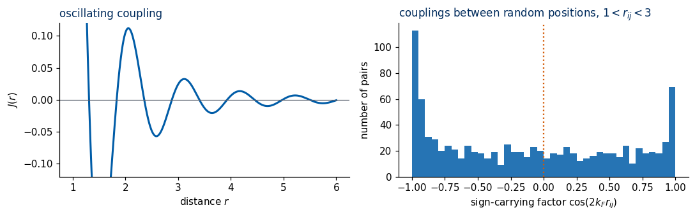
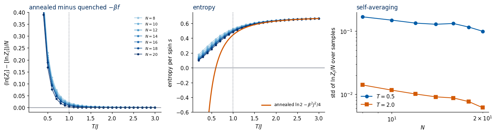
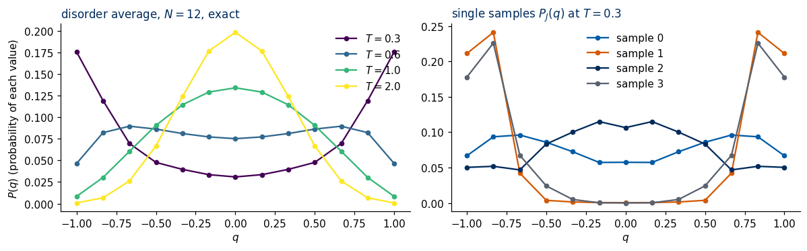
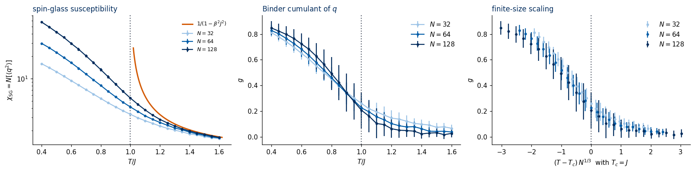
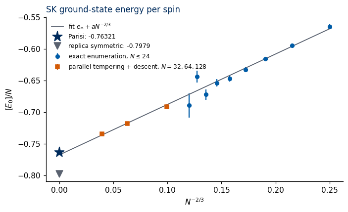
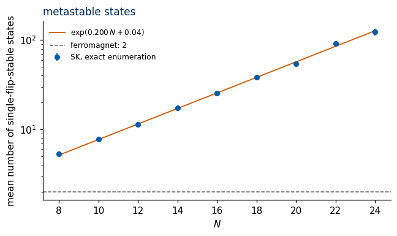
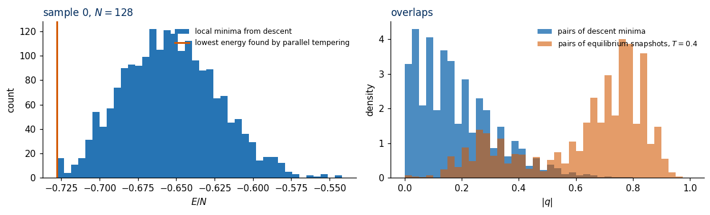
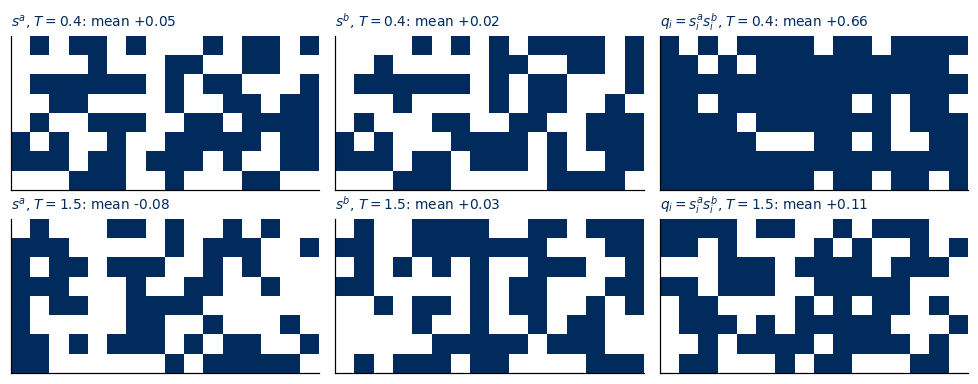
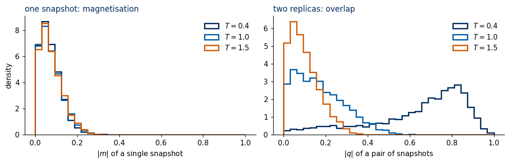

Lab 032 — Physics of the Sherrington–Kirkpatrick spin glass
A ferromagnet below its critical temperature is easy to recognise: one look at a snapshot shows large domains of aligned spins, and the magnetisation \(m=\frac1N\sum_i s_i\) is non-zero. A spin glass also freezes at low temperature, every spin picks a preferred direction and keeps it for a very long time, but the frozen directions look random. A snapshot of a frozen spin glass is indistinguishable by eye from a snapshot of a hot, disordered paramagnet, and the magnetisation is zero in both. The order is real, but it is hidden.
This notebook is about the physics of the simplest model with this property, the Sherrington–Kirkpatrick (SK) model [Sherrington & Kirkpatrick 1975]: \(N\) Ising spins, every pair coupled by a random coupling of random sign. No deep learning is used here. The notebook is the physics foundation for the anomaly-detection study of spin-glass data later in Lecture 5, and it produces the Monte Carlo data set used there.
Plan. 1. Motivation: disorder and frustration in magnetic alloys, hard optimisation problems, and energy landscapes in machine learning. 2. The model: the Hamiltonian, the \(1/N\) scaling of the couplings, the gauge symmetry, and the two kinds of averages (thermal and over the disorder), with the annealed free energy computed exactly and compared with exact enumeration. 3. Frustration: a triangle with a negative product of couplings cannot satisfy all its bonds; in the SK model half of all triangles are frustrated. 4. Order without a pattern: the Edwards–Anderson order parameter, the overlap between two replicas, its distribution \(P(q)\), the high-temperature spin-glass susceptibility, and the main results of the replica theory (stated with their meaning and checked numerically, not derived). 5. The transition at \(T_c=J\): parallel-tempering Monte Carlo in JAX for \(N=32,64,128\), an exact equilibration test, \(P(q)\), and the Binder cumulant. 6. The energy landscape: ground-state energies from exact enumeration and from Monte Carlo against Parisi’s value, the number of metastable states, and slow dynamics. 7. The Mattis model: random signs without frustration, a ferromagnet in disguise, no glass. 8. The information is in pairs of replicas: a single snapshot carries no visible order; the overlap field \(q_i=s_i^as_i^b\) carries it. This is the bridge to the machine-learning notebook. 9. Summary, exercises with solutions, references.
Conventions. Boltzmann’s constant \(k_B=1\); \(\beta=1/T\). The coupling scale \(J\) is kept in the formulas and set to \(J=1\) in the code, so temperatures and energies are in units of \(J\). Square brackets \([\,\cdot\,]\) denote the average over the random couplings, angular brackets \(\langle\cdot\rangle\) the thermal average at fixed couplings.
How to run this notebook in Google Colab 1. Go to https://colab.research.google.com → File → Upload notebook (or open it from Google Drive). 2. Run cells one by one with Shift + Enter, in order: later cells use variables defined earlier. 3. The packages jax, numpy, scipy, sympy and matplotlib are pre-installed in Colab; no pip install is required. The notebook runs on the CPU. 4. The Monte Carlo data set (Section 5) is written to data/sk_N{N}.npz and loaded from there if it already exists. Generating it takes several minutes; every other cell runs in seconds. Figures are written to ../beamer/figures/ (created if missing). 5. If the notebook state becomes inconsistent: Runtime → Restart session and run from the top.
Code
import osos.environ["JAX_PLATFORMS"] ="cpu"# the whole notebook runs on the CPUos.environ["CUDA_VISIBLE_DEVICES"] =""# never touch a GPUimport time, itertoolsfrom functools import partialimport numpy as npimport matplotlib.pyplot as pltfrom matplotlib.colors import ListedColormapfrom scipy.special import logsumexpimport sympy as spimport jaximport jax.numpy as jnpfrom jax import laxprint("JAX", jax.__version__, "| devices:", jax.devices(), "| SymPy", sp.__version__, "| NumPy", np.__version__)# UJ coloursUJBlue, UJNavy, DSOrange, UJGray ="#005CA7", "#002B5C", "#D35A05", "#5A6270"SIZE_COLORS = {32: "#9CC3E6", 64: UJBlue, 128: UJNavy} # light -> dark: small N -> large NSPIN_CMAP = ListedColormap(["#FFFFFF", UJNavy]) # s = -1 white, s = +1 navyplt.rcParams.update({"figure.dpi": 110, "axes.spines.top": False, "axes.spines.right": False,"axes.titlesize": 11, "axes.titlecolor": UJNavy, "axes.titlelocation": "left","font.size": 10})DATA ="data"; os.makedirs(DATA, exist_ok=True)FIG ="figures"; os.makedirs(FIG, exist_ok=True)savefig =lambda fig, name: fig.savefig(f"{FIG}/{name}", dpi=200, bbox_inches="tight")rng = np.random.default_rng(2032) # NumPy generator for the small exact calculationsT_C =1.0# SK critical temperature in units of J (Section 4)E0_PARISI =-0.76321# Parisi ground-state energy per spin, Crisanti & Rizzo (2002), see Section 4.7
1. Disorder and frustration: from magnetic alloys to hard optimisation problems
1.1 Glassy magnets
The name spin glass was coined for metallic alloys of a non-magnetic metal with a few percent of randomly substituted magnetic atoms, such as iron in gold [Cannella & Mydosh 1972] or manganese in copper. Experiments found a low-temperature phase in which the magnetic moments freeze in non-periodic directions, with a very slow, strongly history-dependent response to external perturbations [Binder & Young 1986; Billoire 2007].
The moments interact through the conduction electrons. A standard model of this interaction is the RKKY (Ruderman–Kittel–Kasuya–Yosida) coupling \[
J(r)\propto\frac{\cos(2k_F r)}{r^3},
\] with \(k_F\) the Fermi wave number. Its sign oscillates with the distance \(r\). Combined with random positions of the magnetic atoms, any such coupling produces couplings of random sign: some pairs prefer to be parallel (ferromagnetic, \(J>0\)), others antiparallel (antiferromagnetic, \(J<0\)). The positions are fixed when the alloy is made, so the couplings are random but frozen, or quenched. We check the random signs with a few lines of code: \(n\) moments are placed uniformly at random in a cube, and we histogram the factor that carries the sign, \(\cos(2k_Fr_{ij})\), for the strongest couplings (pairs at distances \(1<r_{ij}<3\) in units of the lattice constant; \(k_F=3\), any value of order a few gives the same picture).
Code
def rkky(r, kF=3.0):# RKKY-like coupling: magnitude 1/r^3, sign oscillating with the distance rreturn np.cos(2* kF * r) / r**3n_moments, box =400, 20.0pos = rng.uniform(0, box, size=(n_moments, 3)) # (n_moments, 3) random positions of the magnetic atomsdiff = pos[:, None, :] - pos[None, :, :] # (n_moments, n_moments, 3) pair separationsr_pairs = np.sqrt((diff**2).sum(-1))[np.triu_indices(n_moments, 1)] # all pair distances, each pair oncenear = (r_pairs >1) & (r_pairs <3) # the strongest couplingsfig, ax = plt.subplots(1, 2, figsize=(10, 3.2))rr = np.linspace(1, 6, 1000)ax[0].plot(rr, rkky(rr), color=UJBlue, lw=2); ax[0].axhline(0, color=UJGray, lw=0.8)ax[0].set_ylim(-0.12, 0.12); ax[0].set_xlabel("distance $r$"); ax[0].set_ylabel("$J(r)$"); ax[0].set_title("oscillating coupling")ax[1].hist(np.cos(6.0* r_pairs[near]), bins=40, color=UJBlue, alpha=0.85); ax[1].axvline(0, color=DSOrange, ls=":")ax[1].set_xlabel(r"sign-carrying factor $\cos(2k_F r_{ij})$"); ax[1].set_ylabel("number of pairs")ax[1].set_title("couplings between random positions, $1<r_{ij}<3$")fig.tight_layout(); plt.show()print(f"pairs with 1 < r < 3: {near.sum()}; fraction with J > 0 (ferromagnetic): {np.mean(rkky(r_pairs[near]) >0):.3f},"f" fraction with J < 0 (antiferromagnetic): {np.mean(rkky(r_pairs[near]) <0):.3f}")

pairs with 1 < r < 3: 945; fraction with J > 0 (ferromagnetic): 0.433, fraction with J < 0 (antiferromagnetic): 0.567
Both signs occur in comparable numbers. The SK model keeps exactly this ingredient, random signs, and drops the geometry: every spin is coupled to every other spin, with a Gaussian random coupling.
1.2 Hard optimisation problems
Finding the lowest-energy configuration of \(E(\boldsymbol s)=-\sum_{i<j}J_{ij}s_is_j\) for given couplings is a combinatorial optimisation problem over \(2^N\) configurations. With the couplings chosen appropriately, many classic hard problems of computer science (graph partitioning, maximum cut, satisfiability, all of Karp’s 21 NP-complete problems, where NP stands for nondeterministic polynomial time) can be written in exactly this form [Lucas 2014]; the computational complexity of finding spin-glass ground states was analysed early by Barahona [Barahona 1982]. Conversely, spin-glass physics produced general-purpose algorithms: simulated annealing [Kirkpatrick, Gelatt & Vecchi 1983] was proposed by one of the two authors of the SK model, and the parallel-tempering method used in Section 5 was designed for spin glasses [Hukushima & Nemoto 1996].
1.3 Energy landscapes in machine learning
A network of binary units with symmetric weights \(W_{ij}\) and energy \(E(\boldsymbol s)=-\frac12\sum_{ij}W_{ij}s_is_j\) is the Hopfield network [Hopfield 1982]: the same Hamiltonian, with couplings constructed from data instead of drawn at random. The loss function of a neural network is likewise a function on a very high-dimensional space with many local minima. The SK model is the solvable prototype of such a rugged landscape: exponentially many minima, barriers between them, and slow dynamics. The vocabulary developed for it (metastable states, overlaps between minima, replicas) is used throughout the theory of learning [Mézard & Montanari 2009; Charbonneau et al. 2023].
What to expect. In this notebook the spins have no positions at all: the SK model has no lattice, so there is no spatial pattern to look at. We will see that the low-temperature phase is nevertheless sharply defined, and that the right tool to see it is a comparison of two independent copies of the system with the same couplings.
2. The Sherrington–Kirkpatrick model
2.1 The Hamiltonian
\(N\) Ising spins \(s_i=\pm1\), \(i=1,\dots,N\), and every pair\((i,j)\) is coupled: \[
H(\boldsymbol s) = -\sum_{i<j} J_{ij}\, s_i s_j = -\frac12\,\boldsymbol s^{T} J\, \boldsymbol s ,
\qquad J_{ij}=J_{ji}\sim\mathcal N\!\left(0,\frac{J^2}{N}\right)\ \text{independent for } i<j,\qquad J_{ii}=0 .
\]\(\mathcal N(\mu,\sigma^2)\) is the Gaussian distribution with mean \(\mu\) and variance \(\sigma^2\). The mean is zero: ferromagnetic and antiferromagnetic couplings are equally likely. A fixed matrix \(J\) is called a disorder realisation or sample.
Two quantities are used throughout: * the local field on spin \(i\), \(h_i=\sum_{j\neq i}J_{ij}s_j\), so that \(H=-\frac12\sum_i s_ih_i\); * the energy change of one flip\(s_i\to-s_i\): only the \(N-1\) terms containing \(s_i\) change sign, so \(\Delta E_i = 2s_ih_i\). A configuration is stable against every single flip if and only if \(s_ih_i>0\) for all \(i\): every spin is aligned with its local field.
2.2 The \(1/N\) scaling of the couplings
The variance is chosen as \(J^2/N\), not \(J^2\), for the following reason. Take any fixed configuration \(\boldsymbol s\). Then \(J_{ij}s_j\) has the same Gaussian distribution as \(J_{ij}\) (the distribution is symmetric under \(J\to-J\)), so the local field is a sum of \(N-1\) independent Gaussians: \[
\operatorname{Var}(h_i) = (N-1)\,\sigma^2,\qquad \sigma^2=\operatorname{Var}(J_{ij}).
\] * With \(\sigma^2=J^2/N\): \(\operatorname{Var}(h_i)=J^2(N-1)/N\to J^2\). The field on a spin stays of order one as \(N\) grows, so temperatures of order \(J\) compete with it, and the transition temperature has a finite limit. * With \(\sigma^2=J^2\) (no scaling): the field grows like \(\sqrt N\,J\), and so would every characteristic temperature; there would be no thermodynamic limit. * A ferromagnet with all-to-all couplings needs \(J_{ij}=J_0/N\) (the Curie–Weiss model), because there the \(N\) terms add coherently: \(h_i=J_0m\). Random signs add incoherently, like a random walk, so the coupling is scaled by \(1/\sqrt N\) in magnitude, i.e. \(1/N\) in variance.
The energy of a configuration is \(H=-\sum_{i<j}J_{ij}s_is_j\), a sum of \(N(N-1)/2\) independent terms. For a random configuration it has mean \(0\) and variance \(\frac{N(N-1)}2\,\sigma^2 = \frac{(N-1)J^2}{2}\): a typical configuration has energy of order \(\sqrt N\). The low-energy configurations, which dominate at low temperature, have energies of order \(-N\) (Section 6); the energy is extensive.
We check these statements symbolically with SymPy (the Gaussian moments by direct integration, then the sums by independence) and then numerically.
Code
x = sp.symbols("x", real=True)sigma, Jc, N_s, alpha = sp.symbols("sigma J N alpha", positive=True)gauss = sp.exp(-x**2/ (2* sigma**2)) / sp.sqrt(2* sp.pi * sigma**2) # density of N(0, sigma^2)moment =lambda k: sp.simplify(sp.integrate(x**k * gauss, (x, -sp.oo, sp.oo)))print("normalisation :", moment(0))print("E[J_ij] :", moment(1))print("E[J_ij^2] :", moment(2))print("E[J_ij^4] :", moment(4))# independent terms: the variance of a sum is the sum of the variancesvar_h = (N_s -1) * moment(2) # local field: N-1 couplingsvar_H = N_s * (N_s -1) /2* moment(2) # energy of a random configuration: N(N-1)/2 couplingsprint("\nVar(h_i) =", var_h)print("Var(H), random config =", var_H)var_h_SK = sp.simplify(var_h.subs(sigma**2, Jc**2/ N_s))print("\nwith sigma^2 = J^2/N: Var(h_i) =", var_h_SK, " -> N -> oo:", sp.limit(var_h_SK, N_s, sp.oo))print("with sigma^2 = J^2/N: Var(H) =", sp.simplify(var_H.subs(sigma**2, Jc**2/ N_s)))# general scaling sigma^2 = J^2 / N^alpha: the field has a finite, non-zero limit only for alpha = 1var_h_alpha = var_h.subs(sigma**2, Jc**2/ N_s**alpha)for a in (sp.Rational(1, 2), 1, 2):print(f"alpha = {a}: Var(h_i) = {sp.simplify(var_h_alpha.subs(alpha, a))} -> N -> oo: {sp.limit(var_h_alpha.subs(alpha, a), N_s, sp.oo)}")
Numerical check. For several \(N\) we draw n_dis coupling matrices of shape (n_dis, N, N), one random configuration per matrix, and compute the local fields \(h=J\boldsymbol s\) (shape (n_dis, N)) and the energies \(H=-\frac12\boldsymbol s^TJ\boldsymbol s\) (shape (n_dis,)). The function sk_couplings is used in the whole notebook: it draws the upper triangle and symmetrises.
Code
def sk_couplings(key, n_dis, N, J=1.0):"""n_dis independent SK coupling matrices, shape (n_dis, N, N): symmetric, zero diagonal, J_ij ~ N(0, J^2/N).""" A = jax.random.normal(key, (n_dis, N, N)) * (J / jnp.sqrt(N)) upper = jnp.triu(A, 1) # keep i < j onlyreturn upper + jnp.swapaxes(upper, 1, 2) # J_ji = J_ij, J_ii = 0def random_spins(key, shape):"""Uniformly random configurations s_i = +-1 (float32)."""return jnp.where(jax.random.bernoulli(key, 0.5, shape), 1.0, -1.0)print(" N Var(h_i) measured (N-1)/N Var(H)/N measured (N-1)/(2N) samples")key = jax.random.PRNGKey(1)for N in (16, 64, 256, 1024): n_batch, batch =16, max(4, 2**21// N**2) # 16 batches; the batch size keeps the memory bounded hv, Hs = [], []for _ inrange(n_batch): key, k1, k2 = jax.random.split(key, 3) Jm = sk_couplings(k1, batch, N) # (batch, N, N) s = random_spins(k2, (batch, N)) # one random configuration per sample h = jnp.einsum("dij,dj->di", Jm, s) # (batch, N) local fields hv.append(np.asarray(h).ravel()); Hs.append(np.asarray(-0.5* jnp.sum(s * h, axis=1))) # energies (batch,) hv, Hs = np.concatenate(hv), np.concatenate(Hs) n =len(Hs) var_H, err_H = Hs.var() / N, Hs.var() / N * np.sqrt(2/ (n -1)) # standard error of a variance estimateprint(f"{N:5d}{hv.var():8.4f}{(N -1) / N:7.4f}{var_H:8.4f} ± {err_H:.4f}{(N -1) / (2* N):7.4f}{n}")
N Var(h_i) measured (N-1)/N Var(H)/N measured (N-1)/(2N) samples
16 0.9379 0.9375 0.4680 ± 0.0018 0.4688 131072
64 0.9843 0.9844 0.4833 ± 0.0076 0.4922 8192
256 0.9889 0.9961 0.4798 ± 0.0300 0.4980 512
1024 1.0022 0.9990 0.4186 ± 0.0746 0.4995 64
The measured variances agree with the formulas within the statistical error of the finite number of samples. The local field stays of order one for every \(N\); the energy of a random configuration is of order \(\sqrt N\), small compared with the extensive energies of the low-lying states.
2.3 Symmetries: the global flip and the gauge transformation
Global flip.\(H(-\boldsymbol s)=H(\boldsymbol s)\) for every sample. Hence, at any finite \(N\), \(\langle s_i\rangle=0\) exactly.
Gauge transformation. Choose any signs \(\tau_i=\pm1\) and transform \[
s_i\to\tau_is_i,\qquad J_{ij}\to\tau_i\tau_jJ_{ij}.
\] Each term \(J_{ij}s_is_j\to\tau_i^2\tau_j^2J_{ij}s_is_j=J_{ij}s_is_j\) is unchanged, so the energy of every configuration is unchanged. Because the Gaussian distribution of \(J_{ij}\) is symmetric, the transformed couplings \(\tau_i\tau_jJ_{ij}\) have the same distribution as the original ones.
The gauge symmetry has a strong consequence. Every quantity averaged over the disorder must be invariant under the transformation. The magnetisation of a sample, \(\frac1N\sum_i\langle s_i\rangle\), is not invariant (\(s_i\to\tau_is_i\) flips arbitrary spins), so it carries no information about the ordering after averaging over samples. The invariant combinations are products in which every spin index appears twice, such as \(\langle s_is_j\rangle^2\) or, for two copies \(a,b\) of the system, \(s_i^as_i^b\). These are the building blocks of the spin-glass order parameter (Section 4).
Code
# symbolic check of the gauge invariance for N = 4: spins s_i, signs tau_i, couplings J_ijNg =4s_sym = sp.symbols(f"s1:{Ng +1}")t_sym = sp.symbols(f"tau1:{Ng +1}")J_sym = {(i, j): sp.Symbol(f"J{i +1}{j +1}") for i inrange(Ng) for j inrange(i +1, Ng)}H_sym =-sum(Jij * s_sym[i] * s_sym[j] for (i, j), Jij in J_sym.items())H_gauge =-sum(t_sym[i] * t_sym[j] * Jij * (t_sym[i] * s_sym[i]) * (t_sym[j] * s_sym[j]) for (i, j), Jij in J_sym.items())difference = sp.expand(sp.expand(H_gauge).subs({t**2: 1for t in t_sym}) - H_sym) # use tau_i^2 = 1print("H(s; J) =", H_sym)print("H(tau s; tau_i tau_j J_ij) - H(s; J) =", difference)# numerical check on one sample with N = 200key, k1, k2, k3 = jax.random.split(key, 4)Jm = sk_couplings(k1, 1, 200)[0]s = random_spins(k2, (200,)); tau = random_spins(k3, (200,))E =lambda s, J: -0.5* s @ J @ sprint(f"\nN = 200: E(s; J) = {float(E(s, Jm)):.6f}, E(tau*s; tau_i tau_j J_ij) = {float(E(tau * s, Jm * jnp.outer(tau, tau))):.6f}")print(f"magnetisation before {float(s.mean()):+.3f}, after the gauge transformation {float((tau * s).mean()):+.3f} (not invariant)")
N = 200: E(s; J) = -8.619366, E(tau*s; tau_i tau_j J_ij) = -8.619366
magnetisation before +0.050, after the gauge transformation +0.090 (not invariant)
2.4 Quenched disorder: two different averages
A spin glass has two sources of randomness, on two very different time scales.
Thermal noise. At fixed couplings \(J\) the spins fluctuate. Thermal averages are Boltzmann averages at fixed \(J\): \[
\langle A\rangle_J=\frac{1}{Z_J}\sum_{\boldsymbol s}A(\boldsymbol s)\,e^{-\beta H_J(\boldsymbol s)},\qquad Z_J=\sum_{\boldsymbol s}e^{-\beta H_J(\boldsymbol s)} .
\]
Disorder. The couplings are random but frozen (quenched): in the alloy the atoms do not move on the time scale of the spin dynamics. The average over realisations, \([X]=\int\!\prod_{i<j}dJ_{ij}\,P(J_{ij})\;X(J)\), is taken after the thermal average, sample by sample.
The physically relevant free energy is therefore the quenched average \[
f=-\frac{T}{N}\,[\ln Z_J],
\] not the annealed one, \(f_{\rm ann}=-\frac{T}{N}\ln[Z_J]\), which would describe couplings that fluctuate and equilibrate together with the spins. The reason the quenched average is the meaningful one is self-averaging: as \(N\to\infty\), the free energy per spin of a single large sample, \(-\frac{T}{N}\ln Z_J\), converges to its disorder average. One large sample is representative. \(Z_J\) itself is not self-averaging: it is exponential in \(N\) and its average is dominated by rare samples.
The logarithm is concave, so Jensen’s inequality gives a strict ordering: \([\ln Z_J]\le\ln[Z_J]\), i.e. \(f\ge f_{\rm ann}\).
The annealed free energy, exactly. The average of \(Z\) is easy, because the couplings are independent and appear in the exponent: \[
[Z_J] = \sum_{\boldsymbol s}\prod_{i<j}\big[e^{\beta J_{ij}s_is_j}\big],\qquad
\big[e^{\beta J_{ij}s_is_j}\big]=e^{\beta^2\sigma^2/2}\quad(\text{Gaussian integral; independent of } s_is_j=\pm1).
\] Every configuration contributes the same factor, so \([Z_J]=2^N\exp\!\big(\frac{N(N-1)}2\frac{\beta^2J^2}{2N}\big)\) and, for \(N\to\infty\), \[
-\beta f_{\rm ann}=\ln2+\frac{\beta^2J^2}{4},\qquad u_{\rm ann}=-\frac{\beta J^2}2,\qquad s_{\rm ann}=\ln2-\frac{\beta^2J^2}{4}.
\] The annealed entropy becomes negative below \(T^*=J/(2\sqrt{\ln2})\). The entropy of a system with a finite number of discrete states is \(-\sum p\ln p\ge0\), so the annealed result must fail at low temperature. Aizenman, Lebowitz and Ruelle proved that for \(T>J\) the quenched free energy equals the annealed one in the limit \(N\to\infty\) [Aizenman, Lebowitz & Ruelle 1987]: the high-temperature phase is simple, and something happens at \(T=J\). We derive the annealed results with SymPy and then compare them with exact enumeration of small systems.
Exact enumeration. For \(N\le 24\) we can visit all \(2^N\) configurations. Because \(H(-\boldsymbol s)=H(\boldsymbol s)\) we fix \(s_N=+1\), enumerate the \(M=2^{N-1}\) remaining configurations, and account for the mirror images by a factor \(2\). Configuration number \(k\) is encoded by the bits of \(k\), \(s_i=2\,\mathrm{bit}_i(k)-1\). For one sample:
array
shape
meaning
S
(M, N)
all configurations with \(s_N=+1\)
Hf = S @ J
(M, N)
local fields \(h_i\) of every configuration
E
(M,)
energies \(E=-\frac12\sum_is_ih_i\)
logw
(n_T, M)
\(-\beta E\) for every temperature on the grid
From these: \(\ln Z_J=\ln2+\operatorname{logsumexp}(-\beta E)\), the energy \(U=\langle E\rangle\), the ground-state energy \(E_0=\min E\), and the number of configurations stable against every single flip (all \(s_ih_i>0\)). For the spin-glass susceptibility (Section 4) we also need the correlation matrix \(C_{ij}=\langle s_is_j\rangle\) of shape (N, N), which is \(S^T\mathrm{diag}(p)\,S\) with the Boltzmann probabilities \(p\) (the mirror images give the same \(s_is_j\)).
Code
def half_configs(N):"""All 2^(N-1) configurations with s_N = +1, shape (2^(N-1), N), float32.""" k = jnp.arange(2** (N -1), dtype=jnp.int32) bits = (k[:, None] >> jnp.arange(N -1)) &1return jnp.concatenate([2.0* bits -1.0, jnp.ones((k.size, 1))], axis=1)@jax.jitdef enumerate_sample(J, betas, betas_chi):"""Exact thermodynamics of one sample J (N, N). Returns ln Z (n_T,), U (n_T,), E0, number of single-flip-stable configurations, chi_SG (n_chi,).""" N = J.shape[0] S = half_configs(N) # (M, N) Hf = S @ J # (M, N) local fields E =-0.5* jnp.sum(S * Hf, axis=1) # (M,) energies n_stable =2* jnp.sum(jnp.all(S * Hf >0, axis=1)) # x2 for the mirror images logw =-betas[:, None] * E[None, :] # (n_T, M) lse = jax.scipy.special.logsumexp(logw, axis=1) p = jnp.exp(logw - lse[:, None]) # Boltzmann probabilities on the half space logZ = jnp.log(2.0) + lse U = p @ E# spin-glass susceptibility chi_SG = (1/N) sum_ij <s_i s_j>^2 at the temperatures betas_chi pc = jnp.exp(-betas_chi[:, None] * E[None, :] - jax.scipy.special.logsumexp(-betas_chi[:, None] * E[None, :], axis=1)[:, None]) C = jnp.einsum("bm,mi,mj->bij", pc, S, S) # (n_chi, N, N) correlation matrices chi = jnp.sum(C**2, axis=(1, 2)) / Nreturn logZ, U, jnp.min(E), n_stable, chi@partial(jax.jit, static_argnames=("n_chunk",))def ground_state_chunked(J, n_chunk):"""E0 and the number of single-flip-stable configurations, enumerating in n_chunk chunks (for N = 22, 24).""" N = J.shape[0] M =2** (N -1); m = M // n_chunkdef body(carry, c): k = c * m + jnp.arange(m, dtype=jnp.int32) bits = (k[:, None] >> jnp.arange(N -1)) &1 S = jnp.concatenate([2.0* bits -1.0, jnp.ones((m, 1))], axis=1) Hf = S @ J E =-0.5* jnp.sum(S * Hf, axis=1)return (jnp.minimum(carry[0], E.min()), carry[1] + jnp.sum(jnp.all(S * Hf >0, axis=1))), None (E0, n), _ = lax.scan(body, (jnp.inf, 0), jnp.arange(n_chunk))return E0, 2* n# check against a direct loop over all 2^N configurations (itertools) for one N = 8 sampleJ8 = np.asarray(sk_couplings(jax.random.PRNGKey(5), 1, 8)[0], dtype=np.float64)T_check = np.array([0.5, 1.0, 2.0])all_s = np.array(list(itertools.product([-1, 1], repeat=8)), dtype=np.float64)E_all =-0.5* np.einsum("ri,ij,rj->r", all_s, J8, all_s)logZ_direct = logsumexp(-E_all[None, :] / T_check[:, None], axis=1)stable_direct = np.sum(np.all(all_s * (all_s @ J8) >0, axis=1))out = enumerate_sample(jnp.asarray(J8, jnp.float32), jnp.asarray(1/ T_check, jnp.float32), jnp.asarray([1.0], jnp.float32))print("ln Z, direct loop :", np.round(logZ_direct, 5), " E0 =", round(E_all.min(), 5), " stable configurations:", stable_direct)print("ln Z, enumerate_sample:", np.round(np.asarray(out[0]), 5), " E0 =", round(float(out[2]), 5), " stable configurations:", int(out[3]))E0c, nc = ground_state_chunked(jnp.asarray(J8, jnp.float32), 4)print("ground_state_chunked :", "E0 =", round(float(E0c), 5), " stable configurations:", int(nc))
Now the disorder average. For each \(N\) we draw many samples; the number decreases with \(N\) because the cost grows like \(2^N\). The temperature grid T_enum is used for the free energy and the energy; the spin-glass susceptibility is computed at the few temperatures T_chi. For \(N=22\) and \(24\) we only compute ground-state energies and the number of stable configurations (Section 6).
Code
T_enum = np.round(np.linspace(0.2, 3.0, 29), 3) # temperature grid of the exact calculationT_chi = np.array([0.5, 1.0, 1.2, 1.5, 2.0, 3.0]) # temperatures for chi_SG (all on T_enum)b_enum, b_chi = jnp.asarray(1/ T_enum, jnp.float32), jnp.asarray(1/ T_chi, jnp.float32)N_ENUM = {8: 1000, 10: 1000, 12: 800, 14: 500, 16: 300, 18: 150, 20: 60}N_GS_ONLY = {22: 30, 24: 12}enum = {} # enum[N] = dict of per-sample arrayst0 = time.time()for N, n_samp in N_ENUM.items(): Js = sk_couplings(jax.random.PRNGKey(100+ N), n_samp, N) res = [enumerate_sample(Js[d], b_enum, b_chi) for d inrange(n_samp)] enum[N] = {k: np.array([np.asarray(r[i]) for r in res]) for i, k inenumerate(["logZ", "U", "E0", "n_stable", "chi"])}print(f"N = {N:2d}: {n_samp:5d} samples, time so far {time.time() - t0:6.1f} s")for N, n_samp in N_GS_ONLY.items(): Js = sk_couplings(jax.random.PRNGKey(100+ N), n_samp, N) res = [ground_state_chunked(Js[d], 2** (N -20)) for d inrange(n_samp)] enum[N] = {"E0": np.array([float(r[0]) for r in res]), "n_stable": np.array([int(r[1]) for r in res])}print(f"N = {N:2d}: {n_samp:5d} samples (ground states only), time so far {time.time() - t0:6.1f} s")
N = 8: 1000 samples, time so far 2.3 s
N = 10: 1000 samples, time so far 5.4 s
N = 12: 800 samples, time so far 8.4 s
N = 14: 500 samples, time so far 12.6 s
N = 16: 300 samples, time so far 19.9 s
N = 18: 150 samples, time so far 41.4 s
N = 20: 60 samples, time so far 84.9 s
N = 22: 30 samples (ground states only), time so far 92.0 s
N = 24: 12 samples (ground states only), time so far 102.0 s
Code
fig, ax = plt.subplots(1, 3, figsize=(13, 3.6))TT = np.linspace(0.2, 3.0, 300)blues = plt.cm.Blues(np.linspace(0.4, 1.0, len(N_ENUM)))for c, N inzip(blues, N_ENUM): mbf = enum[N]["logZ"].mean(0) / N # quenched -beta f = [ln Z]/N ent = mbf + enum[N]["U"].mean(0) / (N * T_enum) # s = -beta f + beta u ann_N = np.log(2) + (N -1) / (4* N * T_enum**2) # finite-N annealed ln[Z]/N ax[0].plot(T_enum, ann_N - mbf, "o-", ms=3, lw=1, color=c, label=f"$N={N}$") ax[1].plot(T_enum, ent, "o-", ms=3, lw=1, color=c)ax[1].plot(TT, np.log(2) -1/ (4* TT**2), color=DSOrange, lw=2, label=r"annealed $\ln2-\beta^2J^2/4$")ax[0].axhline(0, color=UJGray, lw=0.8); ax[0].set_ylim(-0.02, 0.4); ax[1].set_ylim(-0.6, 0.75); ax[1].axhline(0, color=UJGray, lw=0.8)for a in ax[:2]: a.axvline(T_C, color=UJGray, ls=":", lw=1); a.set_xlabel("$T/J$")ax[0].set_ylabel(r"$(\ln[Z_J]-[\ln Z_J])/N$"); ax[0].set_title("annealed minus quenched $-\\beta f$"); ax[0].legend(frameon=False, fontsize=7)ax[1].set_ylabel("entropy per spin $s$"); ax[1].set_title("entropy"); ax[1].legend(frameon=False, fontsize=8)# self-averaging: sample-to-sample spread of ln Z_J / Nfor Tsel, mk in ((0.5, "o"), (2.0, "s")): i = np.argmin(abs(T_enum - Tsel)) Ns = np.array(list(N_ENUM)) ax[2].loglog(Ns, [enum[N]["logZ"][:, i].std() / N for N in Ns], mk +"-", color=UJBlue if Tsel <1else DSOrange, label=f"$T={Tsel}$")ax[2].set_xlabel("$N$"); ax[2].set_ylabel(r"std of $\ln Z_J/N$ over samples"); ax[2].set_title("self-averaging"); ax[2].legend(frameon=False)fig.tight_layout(); savefig(fig, "gen_sk_annealed_vs_quenched.png"); plt.show()i2, i05 = np.argmin(abs(T_enum -2.0)), np.argmin(abs(T_enum -0.5))for N in (8, 20):print(f"N = {N:2d}: T = 2.0: [ln Z]/N = {enum[N]['logZ'][:, i2].mean() / N:.4f}, finite-N annealed ln2 + beta^2 (N-1)/(4N) = "f"{np.log(2) +0.25* (N -1) / N /4:.4f} | T = 0.5: [ln Z]/N = {enum[N]['logZ'][:, i05].mean() / N:.4f}, "f"annealed {np.log(2) +4* (N -1) / N /4:.4f}")ent20 = enum[20]["logZ"].mean(0) /20+ enum[20]["U"].mean(0) / (20* T_enum)print(f"N = 20: quenched entropy at T = 0.2: {ent20[0]:.4f} (positive); annealed entropy at T = 0.2: {np.log(2) -1/ (4*0.2**2):.4f}")

N = 8: T = 2.0: [ln Z]/N = 0.7460, finite-N annealed ln2 + beta^2 (N-1)/(4N) = 0.7478 | T = 0.5: [ln Z]/N = 1.3373, annealed 1.5681
N = 20: T = 2.0: [ln Z]/N = 0.7529, finite-N annealed ln2 + beta^2 (N-1)/(4N) = 0.7525 | T = 0.5: [ln Z]/N = 1.4753, annealed 1.6431
N = 20: quenched entropy at T = 0.2: 0.1022 (positive); annealed entropy at T = 0.2: -5.5569
Reading the plots. * The left panel shows the difference between the annealed value \(\ln[Z_J]/N=\ln2+\beta^2J^2(N-1)/(4N)\) (exact for every \(N\)) and the quenched \([\ln Z_J]/N\). Above \(T=J\) the difference is close to zero for every \(N\): the high-temperature phase is described by the simple annealed calculation. * Below \(T\approx J\) the difference grows and is positive, as Jensen’s inequality requires; the quenched entropy stays positive at all temperatures while the annealed entropy becomes negative below \(T^*\approx0.60\,J\). The annealed calculation misses the physics of the low-temperature phase. * The sample-to-sample spread of \(\ln Z_J/N\) decreases with \(N\) at both temperatures: the free energy per spin is self-averaging.
3. Frustration
3.1 One triangle
Three spins with couplings \(J_{12}=J_{13}=+1\) (ferromagnetic) and \(J_{23}=-1\) (antiferromagnetic). A bond \((ij)\) is satisfied if \(J_{ij}s_is_j>0\), i.e. if its contribution \(-J_{ij}s_is_j\) to the energy is negative. We list all \(2^3=8\) configurations.
Code
J_tri = {(0, 1): +1, (0, 2): +1, (1, 2): -1}print(" s1 s2 s3 | E | broken bonds")for s in itertools.product([1, -1], repeat=3): E =-sum(Jij * s[i] * s[j] for (i, j), Jij in J_tri.items()) broken = [f"{i +1}{j +1}"for (i, j), Jij in J_tri.items() if Jij * s[i] * s[j] <0]print(f"{s[0]:+3d}{s[1]:+3d}{s[2]:+3d} | {E:+3d} | {', '.join(broken)}")
The minimum energy is \(E=-1\), not \(-3\): every configuration breaks at least one bond, and the minimum is six-fold degenerate (any one of the three bonds can be the broken one, times the global flip). The triangle is frustrated: no configuration satisfies all its couplings.
3.2 The criterion: the sign of the product of couplings
Multiply the three bond terms around the triangle: \[
(J_{12}s_1s_2)(J_{23}s_2s_3)(J_{31}s_3s_1)=J_{12}J_{23}J_{31}\,s_1^2s_2^2s_3^2=J_{12}J_{23}J_{31}.
\] The product of the bond terms does not depend on the spins. A satisfied bond has a positive term, so if all three bonds were satisfied the product would be positive. Hence: if \(J_{12}J_{23}J_{31}<0\), at least one bond is broken in every configuration (in fact an odd number). The argument works for any closed loop of bonds, since every spin on a loop appears in exactly two bond terms. The product around a loop is also gauge invariant: \(\tau_i\tau_jJ_{ij}\) multiplies the product by \(\prod\tau^2=1\). Frustration is a property of the couplings that no relabelling of spins can remove; the signs of individual couplings are not.
For couplings of arbitrary magnitudes \(a,b,c>0\) and signs with a negative product, the ground-state energy is \(-(a+b+c)+2\min(a,b,c)\): the weakest bond is the one that breaks. SymPy confirms both statements.
Code
s1, s2, s3 = sp.symbols("s1 s2 s3")J12, J23, J31 = sp.symbols("J12 J23 J31", real=True)loop = sp.expand((J12 * s1 * s2) * (J23 * s2 * s3) * (J31 * s3 * s1))print("product of bond terms :", loop)print("with s_i^2 = 1 :", loop.subs({s1**2: 1, s2**2: 1, s3**2: 1}))# ground-state energy of a frustrated triangle: J12 = a, J31 = b, J23 = -c with a, b, c > 0a, b, c = sp.symbols("a b c", positive=True)Jv = {(0, 1): a, (1, 2): -c, (2, 0): b}energies =sorted({sp.simplify(-sum(Jij * s[i] * s[j] for (i, j), Jij in Jv.items())) for s in itertools.product([1, -1], repeat=3)}, key=lambda e: str(e))print("distinct energies of the 8 states :", energies)print("E0 for a = 3, b = 2, c = 1 :", min(e.subs({a: 3, b: 2, c: 1}) for e in energies)," formula -(a+b+c) + 2 min(a,b,c):", -(3+2+1) +2*1)print("gauge transformation of the product:", sp.expand((sp.Symbol('t1') * sp.Symbol('t2') * J12) * (sp.Symbol('t2') * sp.Symbol('t3') * J23)* (sp.Symbol('t3') * sp.Symbol('t1') * J31)), " (every tau appears squared)")
product of bond terms : J12*J23*J31*s1**2*s2**2*s3**2
with s_i^2 = 1 : J12*J23*J31
distinct energies of the 8 states : [-a + b - c, -a - b + c, a + b + c, a - b - c]
E0 for a = 3, b = 2, c = 1 : -4 formula -(a+b+c) + 2 min(a,b,c): -4
gauge transformation of the product: J12*J23*J31*t1**2*t2**2*t3**2 (every tau appears squared)
3.3 Half of all triangles of the SK model are frustrated
In the SK model every triple \((i,j,k)\) forms a triangle. The product of three independent couplings with symmetric distributions is negative with probability \(1/2\) (an odd number of negative factors), so half of the \(\binom N3\) triangles are frustrated. For a large \(N\) we count them without a triple loop. Let \(\sigma_{ij}=\operatorname{sign}J_{ij}\) (with \(\sigma_{ii}=0\)). Then \[
\operatorname{Tr}\sigma^3=\sum_{i,j,k}\sigma_{ij}\sigma_{jk}\sigma_{ki}
\] runs over ordered triples of distinct indices (the zero diagonal removes the others), and each triangle appears \(3!=6\) times. Hence \[
n_{\rm unfrustrated}-n_{\rm frustrated}=\tfrac16\operatorname{Tr}\sigma^3,\qquad n_{\rm unfrustrated}+n_{\rm frustrated}=\binom N3 .
\] We compare three coupling matrices: the SK couplings, the ferromagnet \(J_{ij}=J/N\), and the Mattis couplings \(J_{ij}=J\xi_i\xi_j/N\) with random \(\xi_i=\pm1\) (Section 7), which have random signs too.
Code
def frustrated_fraction(J):"""Fraction of frustrated triangles from Tr(sign(J)^3), J of shape (N, N) with zero diagonal.""" N = J.shape[0] sg = np.sign(np.asarray(J, dtype=np.float64)) diff = np.trace(sg @ sg @ sg) /6# n_unfrustrated - n_frustrated total = N * (N -1) * (N -2) /6return (total - diff) /2/ totaldef frustrated_fraction_loop(J):"""The same by an explicit loop over all triples (for checking).""" J = np.asarray(J); N = J.shape[0] f = [J[i, j] * J[j, k] * J[k, i] <0for i, j, k in itertools.combinations(range(N), 3)]return np.mean(f)def mattis_couplings(xi, J=1.0):"""Mattis couplings J xi_i xi_j / N, zero diagonal; xi of shape (N,).""" N = xi.shape[0]return J * (np.outer(xi, xi) - np.eye(N)) / NN =30J_sk = np.asarray(sk_couplings(jax.random.PRNGKey(7), 1, N)[0])xi = rng.choice([-1.0, 1.0], size=N)print(f"check, N = {N}: trace formula {frustrated_fraction(J_sk):.5f}, explicit loop {frustrated_fraction_loop(J_sk):.5f}")N =512J_sk = np.asarray(sk_couplings(jax.random.PRNGKey(8), 1, N)[0])xi = rng.choice([-1.0, 1.0], size=N)J_ferro = (np.ones((N, N)) - np.eye(N)) / NJ_mattis = mattis_couplings(xi)print(f"\nN = {N}, {N * (N -1) * (N -2) //6} triangles")for name, Jm in (("SK", J_sk), ("ferromagnet", J_ferro), ("Mattis", J_mattis)):print(f" {name:12s} fraction of negative couplings {np.mean(Jm[np.triu_indices(N, 1)] <0):.3f}, fraction of frustrated triangles {frustrated_fraction(Jm):.4f}")
check, N = 30: trace formula 0.51133, explicit loop 0.51133
N = 512, 22238720 triangles
SK fraction of negative couplings 0.499, fraction of frustrated triangles 0.4999
ferromagnet fraction of negative couplings 0.000, fraction of frustrated triangles 0.0000
Mattis fraction of negative couplings 0.501, fraction of frustrated triangles 0.0000
The Mattis couplings have as many negative signs as the SK couplings, yet not a single frustrated triangle: their loop products are \(\xi_i^2\xi_j^2\xi_k^2/N^3>0\). Random signs alone do not make a spin glass; random signs with frustration do. Section 7 shows what this means physically.
4. Order without a pattern: the Edwards–Anderson order parameter and the replica overlap
4.1 Frozen spins with zero magnetisation
In a ferromagnet below \(T_c\) the thermal averages \(\langle s_i\rangle\) are all equal, and the magnetisation \(m=\frac1N\sum_i\langle s_i\rangle\) measures the order. In a spin glass below its freezing temperature each spin also has a non-zero average \(\langle s_i\rangle\) inside the valley the system is trapped in, but the signs of the \(\langle s_i\rangle\) follow the random couplings, not a common direction. Their sum is a sum of \(N\) terms of random sign, so \(m\) is of order \(1/\sqrt N\) and vanishes for large \(N\). (After averaging over the disorder, \([\langle s_i\rangle]=0\) exactly by the gauge symmetry of Section 2.3.) The SK model has no lattice either, so a snapshot cannot show domains or stripes: the labels \(i\) carry no geometry, and any permutation of the labels (with the couplings permuted accordingly) describes the same system. A snapshot of the frozen phase looks like noise.
4.2 The Edwards–Anderson order parameter
Edwards and Anderson proposed to measure the freezing itself, regardless of the directions [Edwards & Anderson 1975]: \[
q_{\rm EA}=\frac1N\sum_i\langle s_i\rangle^2 .
\] It is zero in the paramagnet (\(\langle s_i\rangle=0\)) and positive when the spins are frozen; it is invariant under the gauge transformation. There is a practical difficulty. In a finite system \(\langle s_i\rangle=0\) exactly (global flip symmetry), and \(\langle s_i\rangle\) restricted to “the valley we are in” is not something a simulation or an experiment can define directly.
4.3 Two replicas and the overlap
The solution is to simulate two independent copies\(a\) and \(b\) of the system, called replicas, with the same couplings\(J\) and independent thermal noise. Their joint distribution is the product \(p_J(\boldsymbol s^a)\,p_J(\boldsymbol s^b)\). The overlap\[
q_{ab}=\frac1N\sum_{i=1}^Ns_i^as_i^b\ \in[-1,1]
\] is \(+1\) for identical configurations, \(-1\) for mirror images, and close to \(0\) for unrelated ones; the fraction of spins on which the two replicas differ is \((1-q_{ab})/2\). Because the replicas are independent at fixed \(J\), \[
\langle q_{ab}^2\rangle=\frac1{N^2}\sum_{i,j}\langle s_i^as_j^a\rangle\langle s_i^bs_j^b\rangle=\frac1{N^2}\sum_{i,j}\langle s_is_j\rangle^2 .
\] The global flip makes \(\langle q_{ab}\rangle=0\) at finite \(N\), but \(\langle q_{ab}^2\rangle\) is not affected: it measures the frozen correlations. If the system sits in one of two mirror valleys with averages \(\pm\langle s_i\rangle\), then \(q_{ab}=\pm q_{\rm EA}\) and \(\langle q^2_{ab}\rangle=q_{\rm EA}^2\).
The full information is in the overlap distribution of a sample and its disorder average, \[
P_J(q)=\big\langle\delta(q-q_{ab})\big\rangle_J,\qquad P(q)=\big[P_J(q)\big].
\] * Paramagnet: \(q_{ab}\) is a sum of \(N\) weakly correlated terms \(\pm1/N\), so \(P(q)\) is a single Gaussian peak at \(q=0\) of width of order \(1/\sqrt N\). * Spin glass: \(P(q)\) has weight at \(q\neq0\) that does not shrink as \(N\) grows (Sections 4.5 and 5).
The spin-glass susceptibility collects the frozen correlations, \[
\chi_{\rm SG}=\frac1N\sum_{i,j}\big[\langle s_is_j\rangle^2\big]=N\,\big[\langle q_{ab}^2\rangle\big],
\] and in the paramagnet it is the width of \(P(q)\): \([\langle q^2\rangle]=\chi_{\rm SG}/N\).
4.4 The spin-glass susceptibility diverges at \(T=J\)
At high temperature \(\chi_{\rm SG}\) can be computed by an expansion in powers of \(\beta\). Write each Boltzmann factor as \(e^{\beta J_{ij}s_is_j}=\cosh(\beta J_{ij})\,(1+t_{ij}s_is_j)\) with \(t_{ij}=\tanh(\beta J_{ij})\approx\beta J_{ij}\) (small, of order \(1/\sqrt N\)). Expanding the product, \(\langle s_is_j\rangle\) is a sum over paths of bonds from \(i\) to \(j\), each path contributing the product of its \(t\)’s. Now square and average over the disorder: 1. Cross terms between two different paths contain some coupling an odd number of times, and \([J_{kl}]=0\) removes them. Only the squares of single paths survive. 2. A path of length \(\ell\) contributes \(\prod[t^2]\approx(\beta^2J^2/N)^\ell\). 3. The number of paths of length \(\ell\) from \(i\) to \(j\) through distinct intermediate sites is \((N-2)(N-3)\cdots(N-\ell)\approx N^{\ell-1}\), and summing over the end point \(j\) gives another factor \(N\).
Therefore, to leading order in \(1/N\), \[
\chi_{\rm SG}=\sum_{\ell=0}^{\infty}N^{\ell}\Big(\frac{\beta^2J^2}{N}\Big)^{\ell}=\sum_{\ell=0}^\infty(\beta J)^{2\ell}=\frac{1}{1-\beta^2J^2}\qquad(T>J).
\] The series diverges at \(\beta J=1\): the paramagnet becomes unstable at \(T_c=J\). This is the value of the SK critical temperature (the replica solution below uses the same convention, \(T_c=J\), as e.g. [Crisanti & Rizzo 2002]). SymPy checks the two ingredients, the path count and the geometric sum; then we compare with exact enumeration.
Code
N_s, l, bJ = sp.symbols("N ell betaJ", positive=True)# number of paths of length ell from i to a fixed j through distinct intermediate sites, relative to N^(ell-1)for ell in (1, 2, 3, 4): n_paths = sp.prod([N_s - k for k inrange(2, ell +1)]) # (N-2)(N-3)...(N-ell); empty product = 1 for ell = 1print(f"ell = {ell}: number of paths = {sp.expand(n_paths)}, ratio to N^(ell-1) -> {sp.limit(n_paths / N_s**(ell -1), N_s, sp.oo)}")chi_series = sp.summation((bJ**2)**l, (l, 0, sp.oo))print("\nchi_SG = sum_l (beta J)^(2 l) =", sp.simplify(chi_series))print("chi_SG at T = 1.5 J:", sp.nsimplify(sp.Rational(1, 1) / (1- sp.Rational(2, 3)**2)), "=", float(1/ (1- (2/3) **2)))
ell = 1: number of paths = 1, ratio to N^(ell-1) -> 1
ell = 2: number of paths = N - 2, ratio to N^(ell-1) -> 1
ell = 3: number of paths = N**2 - 5*N + 6, ratio to N^(ell-1) -> 1
ell = 4: number of paths = N**3 - 9*N**2 + 26*N - 24, ratio to N^(ell-1) -> 1
Above \(T=J\) the exact values approach the formula as \(N\) grows, roughly linearly in \(1/N\). At \(T=J\) and below, \(\chi_{\rm SG}\) keeps growing with \(N\): the correlations \(\langle s_is_j\rangle^2\) no longer decay, which is the signature of freezing.
4.5 The exact overlap distribution of a small system
For \(N=12\) we can compute \(P_J(q)\) exactly. With all \(2^{12}=4096\) configurations in a matrix S of shape (4096, 12), the overlaps of all pairs are the integer matrix O = S @ S.T of shape (4096, 4096) with values \(Nq\in\{-12,-10,\dots,12\}\), and \[
P_J(q)=\sum_{a,b}p_a\,p_b\,\mathbb 1[O_{ab}=Nq],
\] a quadratic form in the Boltzmann probabilities \(p\) for each of the \(13\) possible values.
Code
N_pq =12S_full = jnp.asarray(np.array(list(itertools.product([-1.0, 1.0], repeat=N_pq))), jnp.float32) # (4096, 12)O_full = (S_full @ S_full.T).astype(jnp.int8) # (4096, 4096) N q_abq_values = np.arange(-N_pq, N_pq +1, 2) / N_pq # the 13 possible overlapsT_pq = np.array([0.3, 0.6, 1.0, 2.0])@jax.jitdef exact_Pq(J, betas, S, O):"""Exact P_J(q) for one sample, shape (n_T, 13). S: (4096, N) all configurations, O: (4096, 4096) values N q_ab.""" N = S.shape[1] E =-0.5* jnp.sum(S * (S @ J), axis=1) # (4096,) p = jax.nn.softmax(-betas[:, None] * E[None, :], axis=1) # (n_T, 4096) Boltzmann probabilitiesreturn jnp.stack([jnp.sum((p @ (O == v).astype(jnp.float32)) * p, axis=1) # sum_ab p_a p_b 1[O_ab = v]for v inrange(-N, N +1, 2)], axis=1)Js12 = sk_couplings(jax.random.PRNGKey(12), 150, N_pq)Pq_exact = np.array([np.asarray(exact_Pq(Js12[d], jnp.asarray(1/ T_pq, jnp.float32), S_full, O_full)) for d inrange(150)]) # (150, n_T, 13)print("normalisation check, sum_q P_J(q) for the first sample:", np.round(Pq_exact[0].sum(1), 6))fig, ax = plt.subplots(1, 2, figsize=(11, 3.5))for k, T inenumerate(T_pq): ax[0].plot(q_values, Pq_exact[:, k].mean(0), "o-", ms=4, color=plt.cm.viridis(k / (len(T_pq) -1)), label=f"$T={T}$")ax[0].set_xlabel("$q$"); ax[0].set_ylabel("$P(q)$ (probability of each value)"); ax[0].set_title(f"disorder average, $N={N_pq}$, exact")ax[0].legend(frameon=False)for d, col inzip(range(4), [UJBlue, DSOrange, UJNavy, UJGray]): ax[1].plot(q_values, Pq_exact[d, 0], "o-", ms=4, color=col, label=f"sample {d}")ax[1].set_xlabel("$q$"); ax[1].set_title(f"single samples $P_J(q)$ at $T={T_pq[0]}$"); ax[1].legend(frameon=False)fig.tight_layout(); plt.show()for k, T inenumerate(T_pq): q2 = (Pq_exact[:, k] * q_values**2).sum(1).mean()print(f"T = {T}: [<q^2>] = {q2:.4f} (a random pair of configurations has <q^2> = 1/N = {1/ N_pq:.4f})")
normalisation check, sum_q P_J(q) for the first sample: [1. 1. 1. 1.]

T = 0.3: [<q^2>] = 0.6122 (a random pair of configurations has <q^2> = 1/N = 0.0833)
T = 0.6: [<q^2>] = 0.3519 (a random pair of configurations has <q^2> = 1/N = 0.0833)
T = 1.0: [<q^2>] = 0.1905 (a random pair of configurations has <q^2> = 1/N = 0.0833)
T = 2.0: [<q^2>] = 0.1051 (a random pair of configurations has <q^2> = 1/N = 0.0833)
Even for \(12\) spins the trend is visible. At \(T=2\) the distribution is a single bump around \(q=0\). At low temperature the weight moves to large \(|q|\) (the replicas are frozen in the same or mirror valleys), but it is spread over the whole interval, and the individual samples differ strongly from each other: some have most weight at \(|q|=1\) (one dominant pair of ground states), others at intermediate \(|q|\) (several low-lying states that differ in a few spins). Section 5 repeats this for \(N\) up to \(128\) with Monte Carlo.
4.6 The replica-symmetric solution of Sherrington and Kirkpatrick
Sherrington and Kirkpatrick computed \([\ln Z]\) with the replica trick [Sherrington & Kirkpatrick 1975]. The identity \(\ln Z=\lim_{n\to0}(Z^n-1)/n\) replaces the hard average of a logarithm by averages of \(Z^n\), the partition function of \(n\) replicas with the same couplings, which are Gaussian integrals as in Section 2.4. Averaging couples the replicas through the overlaps \(q_{ab}\). The simplest assumption, replica symmetry (RS), is that all overlaps are equal, \(q_{ab}=q\). We do not repeat the calculation; its result has a transparent meaning.
The self-consistency equation. In a frozen state, spin \(i\) feels the field of the other spins with \(i\) itself removed (the cavity field), \(h_i=\sum_jJ_{ij}\langle s_j\rangle\). It is a sum of \(N\) terms with random signs, hence Gaussian, with variance \(\sum_jJ_{ij}^2\langle s_j\rangle^2\approx J^2q\). The spin then has \(\langle s_i\rangle=\tanh(\beta h_i)\), and averaging \(\langle s_i\rangle^2\) over the Gaussian field closes the loop: \[
q=\int\!Dz\;\tanh^2\!\big(\beta J\sqrt q\,z\big),\qquad Dz=\frac{dz}{\sqrt{2\pi}}e^{-z^2/2},
\]\[
-\beta f_{\rm RS}=\frac{\beta^2J^2}{4}(1-q)^2+\int\!Dz\,\ln\!\big(2\cosh\beta J\sqrt q\,z\big),\qquad u_{\rm RS}=-\frac{\beta J^2}{2}\big(1-q^2\big).
\] At \(q=0\) this is exactly the annealed result of Section 2.4. (The same expression is the constant-\(q\) case of Parisi’s free energy written in [Crisanti & Rizzo 2002].)
\(T_c=J\) from the linearised equation. For small \(q\), \(\tanh^2x\approx x^2\) and \(\int Dz\,z^2=1\), so \(q\approx\beta^2J^2q\): a non-zero solution appears exactly when \(\beta J>1\). Expanding one order further gives \(q\approx\tau\) with \(\tau=1-T/J\): the Edwards–Anderson order parameter grows linearly below \(T_c\). SymPy does the expansion.
Code
a, z, q, bet, tau = sp.symbols("a z q beta tau", positive=True)Dz = sp.exp(-z**2/2) / sp.sqrt(2* sp.pi)series = sp.series(sp.tanh(a * z)**2, a, 0, 7).removeO() # tanh^2(a z) to order a^6G = sp.expand(sum(sp.integrate(term * Dz, (z, -sp.oo, sp.oo)) for term in sp.Add.make_args(sp.expand(series))))print("int Dz tanh^2(a z) =", G, "+ O(a^8)")rhs = G.subs(a, bet * sp.sqrt(q)) # J = 1: a^2 = beta^2 qprint("RS equation q = ", sp.expand(rhs))reduced = sp.expand((rhs - q) / q).series(q, 0, 2).removeO() # divide out the trivial root q = 0, keep O(q)print("(rhs - q)/q =", reduced)q_nonzero = sp.solve(sp.Eq(reduced, 0), q)[0]print("non-zero solution to leading order: q =", sp.simplify(q_nonzero))print("with T = 1 - tau: q =", sp.series(q_nonzero.subs(bet, 1/ (1- tau)), tau, 0, 2))
int Dz tanh^2(a z) = 17*a**6/3 - 2*a**4 + a**2 + O(a^8)
RS equation q = 17*beta**6*q**3/3 - 2*beta**4*q**2 + beta**2*q
(rhs - q)/q = -2*beta**4*q + beta**2 - 1
non-zero solution to leading order: q = (beta**2 - 1)/(2*beta**4)
with T = 1 - tau: q = tau + O(tau**2)
Now the full RS solution, numerically. The Gaussian integrals are one-dimensional; we evaluate them with scipy.integrate.quad on \(z>0\) (the integrands are even), and find \(q(T)\) as the root of \(q-\int Dz\tanh^2(\beta\sqrt q z)\) with brentq. From \(q\) we get \(f_{\rm RS}\), \(u_{\rm RS}\) and the entropy \(s_{\rm RS}=\beta(u_{\rm RS}-f_{\rm RS})\).
Code
from scipy.integrate import quadfrom scipy.optimize import brentqphi =lambda z: np.exp(-z**2/2) / np.sqrt(2* np.pi)gauss_avg =lambda g: 2* quad(lambda z: phi(z) * g(z), 0, 12, limit=400)[0] # int Dz g(z) for an even gdef rs_solution(T):"""Replica-symmetric q, f, u, s at temperature T (J = 1).""" b =1/ T F =lambda q: q - gauss_avg(lambda z: np.tanh(b * np.sqrt(q) * z) **2) q = brentq(F, 1e-10, 1.0) if T <1else0.0 log2cosh =lambda x: np.abs(x) + np.log1p(np.exp(-2* np.abs(x))) # ln(2 cosh x) without overflow mbf = b**2* (1- q) **2/4+ gauss_avg(lambda z: log2cosh(b * np.sqrt(q) * z)) u =-b * (1- q**2) /2return q, -T * mbf, u, mbf + b * uT_rs = np.array([0.02, 0.05, 0.1, 0.2, 0.3, 0.4, 0.5, 0.6, 0.7, 0.8, 0.9, 0.95, 0.99, 1.0, 1.2, 1.5])rs = np.array([rs_solution(T) for T in T_rs]) # columns q, f, u, sprint(" T q_RS f_RS u_RS s_RS")for T, (qq, ff, uu, ss) inzip(T_rs, rs):print(f"{T:5.2f}{qq:8.4f}{ff:8.4f}{uu:8.4f}{ss:8.4f}")# check: u = d(beta f)/d beta by a central finite difference at T = 0.5h_b =1e-4bf =lambda b: rs_solution(1/ b)[1] * bprint(f"\nT = 0.5: u_RS formula {rs_solution(0.5)[2]:.6f}, finite difference d(beta f)/d beta {(bf(2+ h_b) - bf(2- h_b)) / (2* h_b):.6f}")print(f"q_RS at T = 0.99 (tau = 0.01): {rs_solution(0.99)[0]:.5f} (leading order q = tau)")
Two observations: * The RS energy at \(T\to0\) approaches a finite value, close to \(-0.80\,J\). It can be derived: for \(T\to0\), \(1-q=\int Dz\,\mathrm{sech}^2(\beta\sqrt q z)\approx\frac{T}{\sqrt q}\,\frac{1}{\sqrt{2\pi}}\int dx\,\mathrm{sech}^2x\), because \(\mathrm{sech}^2\) is concentrated near \(z=0\) where \(Dz\approx dz/\sqrt{2\pi}\). Then \(u_{\rm RS}=-\frac\beta2(1-q)(1+q)\to-(1-q)\beta\) (SymPy below). * The RS entropy becomes negative at low temperature, impossible for Ising spins. The RS solution is wrong below \(T_c\): de Almeida and Thouless showed that it is unstable for all \(T<J\) in zero field [de Almeida & Thouless 1978].
int sech^2(x) dx = 2
1 - q ~ sqrt(2)*T/sqrt(pi) -> u_RS(T -> 0) = -sqrt(2)/sqrt(pi) = -0.797885
numerical RS energy at T = 0.02: -0.7978; RS entropy at T = 0.02: -0.1485 (negative)
4.7 Parisi’s solution: the results we use
Parisi found the correct solution by breaking the replica symmetry in infinitely many steps [Parisi 1979; Parisi 1980]; his free energy was later proved rigorously to be exact [Talagrand 2006]. We do not derive it. Its main results, and their meaning:
The order parameter is a function. Instead of one number \(q\), the solution is a non-decreasing function \(q(x)\), \(0\le x\le1\). Its inverse defines the overlap distribution, \(P(q)=dx/dq\) [Parisi 1983; Crisanti & Rizzo 2002].
Many states. Below \(T_c\) the Boltzmann distribution of a large sample splits into many “pure states” (valleys) \(\alpha\) with weights \(w_\alpha\). Two replicas fall into states \(\alpha,\beta\) independently, and \(P_J(q)=\sum_{\alpha\beta}w_\alpha w_\beta\,\delta(q-q_{\alpha\beta})\). Pairs in the same state give the self-overlap \(q_{\rm EA}\); pairs in different states give smaller overlaps. Hence \(P(q)\) has peaks at \(\pm q_{\rm EA}\) and a continuous part in between, not a single pair of delta functions as in a ferromagnet [Mézard, Parisi & Virasoro 1986].
Sample dependence. The weights \(w_\alpha\) differ from sample to sample, so \(P_J(q)\) differs between samples even for large \(N\).
The critical temperature is \(T_c=J\), the same as in the RS calculation and in the high-temperature expansion.
The ground-state energy per spin for \(N\to\infty\) is \(e_0=-0.76321\pm0.00003\) [Crisanti & Rizzo 2002], in agreement with Parisi’s estimate \(-0.7633\pm0.0001\) [Parisi 1980], above the RS value \(-\sqrt{2/\pi}\approx-0.798\).
statement
checked in this notebook
paramagnet: single peak of \(P(q)\) at \(0\), width \(\propto1/\sqrt N\)
Section 5.6
\(\chi_{\rm SG}=1/(1-\beta^2J^2)\) above \(T_c\), divergence at \(T_c=J\)
Sections 4.4 and 5.7
broad \(P(q)\) with weight between the peaks below \(T_c\)
Sections 4.5 and 5.6
\(P_J(q)\) differs from sample to sample
Sections 4.5 and 5.6
crossing of the Binder cumulants near \(T_c=J\)
Section 5.7
\(e_0\approx-0.7632\)
Section 6.1
5. The transition at \(T_c=J\): parallel-tempering Monte Carlo
5.1 Barriers, and the idea of parallel tempering
Below \(T_c\) the free-energy landscape has many valleys separated by barriers that grow with \(N\). A Metropolis chain at a fixed low temperature (single spin flips, accepted with probability \(\min(1,e^{-\beta\Delta E})\)) stays in one valley for a very long time: the samples it produces are correct locally but do not represent the relative weights of the valleys, and the estimate of \(P(q)\), which is all about different valleys, is wrong. Section 6.4 shows this directly.
Parallel tempering (also called replica exchange or exchange Monte Carlo) [Swendsen & Wang 1986; Hukushima & Nemoto 1996; Earl & Deem 2005] runs \(K\) copies of the same sample at temperatures \(T_1<T_2<\dots<T_K\). The joint distribution of the copies is the product of their Boltzmann distributions, \[
\Pi(\boldsymbol s_1,\dots,\boldsymbol s_K)=\prod_{k=1}^K\frac{e^{-\beta_kE(\boldsymbol s_k)}}{Z(\beta_k)} .
\] Two moves alternate: 1. Local moves: one Metropolis sweep of every copy at its own temperature. Each copy is updated with a move that preserves its own Boltzmann distribution, so \(\Pi\) is preserved. 2. Exchange moves: for neighbouring temperatures \(k,k+1\), propose to swap the two configurations. Accept with probability \[
\min\Big(1,\ \exp\big[(\beta_k-\beta_{k+1})(E_k-E_{k+1})\big]\Big),
\] where \(E_k\) is the energy of the configuration currently at temperature \(T_k\). This is the Metropolis rule for the swap: the ratio \(\Pi(\text{after})/\Pi(\text{before})\) equals the exponential (SymPy below), so detailed balance holds and \(\Pi\) is preserved.
The mechanism. A configuration does a random walk in temperature. At high temperature it crosses barriers easily; when it comes back down it can land in a different valley. The swap is accepted often when the energy histograms of neighbouring temperatures overlap, which sets how dense the temperature grid must be. For the replica overlap we need two independent parallel-tempering simulations of the same sample (replicas \(a\) and \(b\)), each with its own \(K\) copies.
Code
bk, bk1, Ek, Ek1 = sp.symbols("beta_k beta_k1 E_k E_k1", real=True)weight =lambda E_at_k, E_at_k1: sp.exp(-bk * E_at_k - bk1 * E_at_k1) # the two factors of Pi that changeratio = sp.simplify(weight(Ek1, Ek) / weight(Ek, Ek1)) # after the swap / before the swapprint("Pi(after) / Pi(before) =", ratio)print("equals exp[(beta_k - beta_k1)(E_k - E_k1)]:", sp.simplify(ratio - sp.exp((bk - bk1) * (Ek - Ek1))) ==0)
Shapes. One simulation handles \(D\) disorder samples, \(2\) replicas and \(K\) temperatures at once. For one sample the \(C=2K\) chains (replica \(r\), temperature slot \(k\), column \(c=rK+k\)) are the columns of a matrix, and jax.vmap maps the per-sample code over the \(D\) samples:
array
shape
meaning
J
(D, N, N)
couplings of the \(D\) samples
s
(D, N, 2, K)
spins: sample \(d\), spin \(i\), replica \(r\in\{a,b\}\), temperature slot \(k\) (reshaped to (D, N, C) for the sweep)
h
(D, N, 2, K)
local fields \(h_i=\sum_jJ_{ij}s_j\) of every chain, kept up to date
beta
(K,)
inverse temperatures, the same for every sample and replica; beta_c = tile(beta, 2) has shape (C,)
lab
(D, 2, K)
label of the configuration in each temperature slot (to follow its walk in temperature)
The sweep. All spins of the SK model are coupled to each other, so two spins cannot be flipped simultaneously: the energy change of one flip depends on all other spins. A sweep visits the spins one after another. After a flip of spin \(i\) by \(\Delta s_i=-2s_i\) every local field changes, \(h_j\to h_j+J_{ji}\Delta s_i\), which is \(O(N)\) work per flip and \(O(N^2)\) per sweep. Done literally, spin by spin, this reads and writes the whole field array \(N\) times per sweep. We organise the same sequential sweep in blocks of \(b=16\) spins: 1. inside a block, the spins are visited one by one; each flip updates only the fields of the \(b\) spins of the block (a small (b, C) array, couplings J_bb of shape (b, b)); 2. after the block, the fields of all \(N\) spins are updated at once by one matrix product, \(h\leftarrow h+J_{:,\text{block}}\,\Delta s_{\text{block}}\), shapes (N, b) @ (b, C).
Every spin still sees the exact current field when it is visited, so this is exactly the sequential Metropolis sweep, with the expensive part done as matrix products.
The exchange. For one sample and one replica the \(K\) configurations are permuted: slot \(k\) receives the configuration from slot \(k+1\) and vice versa if the swap is accepted. Even pairs \((0,1),(2,3),\dots\) and odd pairs \((1,2),(3,4),\dots\) alternate between sweeps, so the attempted swaps never overlap.
Code
from math import gcddef sweep_sample(s, h, J, beta_c, u, block):"""One sequential Metropolis sweep of all chains of one sample. s, h: (N, C) spins and local fields, one chain per column; J: (N, N); beta_c: (C,) inverse temperature of each chain; u: (N, C) uniform random numbers. Spins are visited in the order i = 0, ..., N-1, in blocks of `block` spins.""" N, C = s.shape thr =-jnp.log(u) / (2.0* beta_c) # (N, C): flip spin i iff s_i h_i < thr_i, i.e. u < exp(-2 beta s_i h_i)def do_block(kb, carry): s, h = carry i0 = kb * block s_old = lax.dynamic_slice_in_dim(s, i0, block, 0) # (b, C) spins of the block hb = lax.dynamic_slice_in_dim(h, i0, block, 0) # (b, C) their fields at the start of the block tb = lax.dynamic_slice_in_dim(thr, i0, block, 0) # (b, C) acceptance thresholds J_cols = lax.dynamic_slice_in_dim(J, i0, block, 1) # (N, b) couplings of every spin to the block J_bb = lax.dynamic_slice_in_dim(J_cols, i0, block, 0) # (b, b) couplings inside the block rows = []for j inrange(block): # sequential inside the block (unrolled by jit) sj = s_old[j] accept = sj * hb[j] < tb[j] # Metropolis rule, Delta E = 2 s_j h_j d = jnp.where(accept, -2.0* sj, 0.0) # (C,) change of s_j, 0 if rejected hb = hb + J_bb[:, j:j +1] * d[None, :] # fields of the block spins after this flip rows.append(sj + d) s_new = jnp.stack(rows) # (b, C) s = lax.dynamic_update_slice_in_dim(s, s_new, i0, 0) h = h + J_cols @ (s_new - s_old) # all N fields, one matrix product per blockreturn s, hreturn lax.fori_loop(0, N // block, do_block, (s, h))def swap_moves(s, h, lab, E, beta, u, parity):"""Exchange moves for all samples and replicas. s, h: (D, N, 2, K); lab, E: (D, 2, K); beta: (K,); u: (D, 2, K-1). Pairs (k, k+1) with k % 2 == parity are attempted; returns the permuted arrays and the accepted swaps (D, 2, K-1).""" K = beta.shape[0] log_ratio = (beta[:-1] - beta[1:]) * (E[..., :-1] - E[..., 1:]) # (D, 2, K-1) acc = (jnp.log(u) < log_ratio) & (jnp.arange(K -1) %2== parity) pad = jnp.zeros(acc.shape[:-1] + (1,), bool) up = jnp.concatenate([acc, pad], -1).astype(jnp.int32) # slot k takes from k+1 down = jnp.concatenate([pad, acc], -1).astype(jnp.int32) # slot k+1 takes from k perm = jnp.arange(K) + up - down # (D, 2, K) take =lambda a: jnp.take_along_axis(a, perm[:, None], axis=3) # permute the K axis of (D, N, 2, K)return take(s), take(h), jnp.take_along_axis(lab, perm, 2), jnp.take_along_axis(E, perm, 2), acc@partial(jax.jit, static_argnames=("n_equil", "n_save", "n_meas", "meas_every", "use_swaps"))def parallel_tempering(J, s0, beta, key, n_equil, n_save, n_meas, meas_every, use_swaps=True):"""Parallel tempering for D samples x 2 replicas x K temperatures; s0: (D, 2, K, N) initial spins. Equilibration: n_equil sweeps. Production: n_save blocks of n_meas measurements, one every meas_every sweeps; one configuration per slot is stored at the end of every block. Returns a dict of arrays (shapes in the comments).""" D, R, K, N = s0.shape C = R * K sweep_all = jax.vmap(partial(sweep_sample, block=gcd(N, 16)), in_axes=(0, 0, 0, None, 0)) # over the D samples beta_c = jnp.tile(beta, R) # (C,) column c = r K + k s_init = jnp.transpose(s0, (0, 3, 1, 2)) # (D, N, 2, K) h_init = jnp.einsum("dij,djrk->dirk", J, s_init) carry0 =dict(s=s_init, h=h_init, lab=jnp.broadcast_to(jnp.arange(K), (D, R, K)), emin=jnp.full((D, R), jnp.inf), smin=s0[:, :, 0], acc=jnp.zeros(K -1), t=0, key=key)def one_sweep(c, _): key, k1, k2 = jax.random.split(c["key"], 3) s, h = sweep_all(c["s"].reshape(D, N, C), c["h"].reshape(D, N, C), J, beta_c, jax.random.uniform(k1, (D, N, C))) s, h = s.reshape(D, N, R, K), h.reshape(D, N, R, K) E =-0.5* jnp.sum(s * h, axis=1) # (D, 2, K) energies lab, acc = c["lab"], jnp.zeros((D, R, K -1), bool)if use_swaps: s, h, lab, E, acc = swap_moves(s, h, lab, E, beta, jax.random.uniform(k2, (D, R, K -1)), c["t"] %2) k_low = jnp.argmin(E, -1) # (D, 2) lowest-energy slot s_low = jnp.take_along_axis(s, k_low[:, None, :, None], axis=3)[..., 0] # (D, N, 2) better = E.min(-1) < c["emin"] q = jnp.mean(s[:, :, 0] * s[:, :, 1], axis=1) # (D, K) overlaps of the two replicas new =dict(s=s, h=h, lab=lab, emin=jnp.where(better, E.min(-1), c["emin"]), smin=jnp.where(better[..., None], jnp.swapaxes(s_low, 1, 2), c["smin"]), acc=c["acc"] + acc.sum((0, 1)), t=c["t"] +1, key=key) trace = (E.mean((0, 1)) / N, (q**2).mean(0), lab[0, 0].astype(jnp.int8)) # [E]/N (K,), [q^2] (K,), labels (K,)return new, tracedef measure(c, _): c, tr = lax.scan(one_sweep, c, None, length=meas_every) q_int = jnp.sum(c["s"][:, :, 0] * c["s"][:, :, 1], axis=1).astype(jnp.int16) # (D, K): N qreturn c, (tr, q_int)def block(c, _): c, (tr, q_int) = lax.scan(measure, c, None, length=n_meas)return c, (tr, q_int, jnp.transpose(c["s"], (0, 2, 3, 1)).astype(jnp.int8)) # snapshot (D, 2, K, N) c, tr_eq = lax.scan(one_sweep, carry0, None, length=n_equil) c, (tr_pr, q_int, conf) = lax.scan(block, c, None, length=n_save) flat =lambda a: a.reshape((-1,) + a.shape[3:]) # (n_save, n_meas, meas_every, K) -> (sweeps, K) traces = [jnp.concatenate([tr_eq[i], flat(tr_pr[i])]) for i inrange(3)]returndict(e_trace=traces[0], q2_trace=traces[1], label_trace=traces[2], q_int=jnp.transpose(q_int.reshape(-1, D, K), (1, 2, 0)), # (D, K, n_save * n_meas) configs=jnp.transpose(conf, (1, 2, 3, 0, 4)), # (D, 2, K, n_save, N) E_min=c["emin"], s_min=c["smin"].astype(jnp.int8), acc_count=c["acc"], n_sweeps=c["t"])
5.3 Check against exact enumeration
For \(N=12\) we know the exact thermal averages of every sample. We run the sampler for \(D=32\) samples on a few temperatures and compare the disorder averages \([e]=[\langle E\rangle]/N\) and \([\langle q^2\rangle]\) with the exact values for the same samples. The exact \(\langle q^2\rangle=\frac1{N^2}\sum_{ij}\langle s_is_j\rangle^2\) comes from the correlation matrix (Section 2.4). Statistical errors of the Monte Carlo averages are estimated from the spread of 16 consecutive blocks of the production run.
Code
def block_error(x, n_blocks=16):"""Mean and standard error of a time series x (n_time,) from n_blocks consecutive block means.""" b = x[: len(x) // n_blocks * n_blocks].reshape(n_blocks, -1).mean(1)return b.mean(), b.std(ddof=1) / np.sqrt(n_blocks)N_chk, D_chk =12, 32T_chk = np.array([0.3, 0.45, 0.6, 0.8, 1.0, 1.3, 1.6, 2.0])J_chk = sk_couplings(jax.random.PRNGKey(900), D_chk, N_chk)k_init, k_run = jax.random.split(jax.random.PRNGKey(901))t0 = time.time()out = parallel_tempering(J_chk, random_spins(k_init, (D_chk, 2, len(T_chk), N_chk)), jnp.asarray(1/ T_chk, jnp.float32), k_run, n_equil=1000, n_save=16, n_meas=64, meas_every=2)print(f"Monte Carlo: {time.time() - t0:.1f} s")ex = [enumerate_sample(J_chk[d], jnp.asarray(1/ T_chk, jnp.float32), jnp.asarray(1/ T_chk, jnp.float32)) for d inrange(D_chk)]e_exact = np.mean([np.asarray(r[1]) for r in ex], axis=0) / N_chk # [U]/Nq2_exact = np.mean([np.asarray(r[4]) for r in ex], axis=0) / N_chk # [chi_SG]/N = [<q^2>]n_eq =1000q2_mc = (np.asarray(out["q_int"], np.float64) / N_chk) **2# (D, K, n_q)print(" T [e] MC [e] exact | [<q^2>] MC [<q^2>] exact")for k, T inenumerate(T_chk): e_m, e_err = block_error(np.asarray(out["e_trace"])[n_eq:, k]) q_m, q_err = block_error(q2_mc[:, k].mean(0))print(f"{T:5.2f}{e_m:+.4f} ± {e_err:.4f}{e_exact[k]:+.4f} | {q_m:.4f} ± {q_err:.4f}{q2_exact[k]:.4f}")
The Monte Carlo averages agree with the exact values within a few statistical errors at all temperatures, including those far below \(T_c\).
5.4 An exact equilibration test for Gaussian couplings
How do we know that a simulation of \(N=128\) spins, where no exact answer is available, has reached equilibrium? For Gaussian couplings there is an exact identity between the energy and the overlap [Katzgraber, Palassini & Young 2001]. Its two ingredients:
Gaussian integration by parts (Stein’s lemma): for \(x\sim\mathcal N(0,\sigma^2)\) and a smooth function \(g\), \(\ [x\,g(x)]=\sigma^2\,[g'(x)]\). It follows from \(\frac{d}{dx}e^{-x^2/2\sigma^2}=-\frac{x}{\sigma^2}e^{-x^2/2\sigma^2}\) and one integration by parts.
Derivative of a correlation with respect to its own coupling: \(J_{ij}\) enters \(Z\) through \(e^{\beta J_{ij}s_is_j}\), so \(\partial\langle s_is_j\rangle/\partial J_{ij}=\beta\big(\langle(s_is_j)^2\rangle-\langle s_is_j\rangle^2\big)=\beta\big(1-\langle s_is_j\rangle^2\big)\).
Apply both to the disorder-averaged energy, \([U]=-\sum_{i<j}[J_{ij}\langle s_is_j\rangle]=-\sum_{i<j}\sigma^2\beta\big(1-[\langle s_is_j\rangle^2]\big)\), and use \(\sum_{i<j}\langle s_is_j\rangle^2=\frac12\big(N^2\langle q^2\rangle-N\big)\) (Section 4.3). With \(\sigma^2=J^2/N\) everything combines into \[
\boxed{\;\frac{[U]}{N}=-\frac{\beta J^2}{2}\Big(1-\big[\langle q^2\rangle\big]\Big)\;}
\] exactly, for every\(N\) and every temperature. In a simulation that starts from random configurations the two sides approach the equilibrium value from opposite directions: the energy decreases from \(0\), while the right-hand side starts near \(-\beta J^2/2\) (no overlap yet) and increases. Equality of the two sides (within errors) is a necessary condition for equilibrium. At high temperature \([\langle q^2\rangle]\to0\) and the identity reduces to the annealed \(u=-\beta J^2/2\).
We check Stein’s lemma and the sum identity with SymPy, and the boxed identity with the exact enumeration data of Section 2.4.
Code
x = sp.symbols("x", real=True)sig2, cc = sp.symbols("sigma2 c", positive=True)rho = sp.exp(-x**2/ (2* sig2)) / sp.sqrt(2* sp.pi * sig2)print("d rho/dx + (x/sigma^2) rho =", sp.simplify(sp.diff(rho, x) + x / sig2 * rho))for g in (x**3, sp.exp(cc * x), sp.cos(cc * x)): lhs = sp.simplify(sp.integrate(x * g * rho, (x, -sp.oo, sp.oo))) rhs = sp.simplify(sig2 * sp.integrate(sp.diff(g, x) * rho, (x, -sp.oo, sp.oo)))print(f"g = {str(g):10s}: [x g(x)] = {lhs}, sigma^2 [g'(x)] = {rhs}, equal: {sp.simplify(lhs - rhs) ==0}")# sum_{i<j} (s_i^a s_j^a)(s_i^b s_j^b) = (N^2 q^2 - N)/2 for explicit spins (N = 5, all configuration pairs)Nn =5ok =all(np.isclose(sum(sa[i] * sa[j] * sb[i] * sb[j] for i inrange(Nn) for j inrange(i +1, Nn)), ((np.dot(sa, sb))**2- Nn) /2)for sa in itertools.product([-1, 1], repeat=Nn) for sb in itertools.product([-1, 1], repeat=Nn))print(f"\nsum_(i<j) s_i^a s_j^a s_i^b s_j^b = (N^2 q^2 - N)/2 for all pairs of configurations (N = {Nn}):", ok)# the boxed identity with exact enumeration: [U]/N against -(beta/2)(1 - [<q^2>]), at the temperatures T_chiprint("\n N T [U]/N (exact) -(beta/2)(1 - [<q^2>]) (exact) difference (paired over samples)")for N in (8, 14, 20):for k, T inenumerate(T_chi): i = np.argmin(abs(T_enum - T));assertabs(T_enum[i] - T) <1e-9 lhs = enum[N]["U"][:, i] / N rhs =-(1/ T) /2* (1- enum[N]["chi"][:, k] / N) dif = lhs - rhsprint(f"{N:3d}{T:5.2f}{lhs.mean():+.4f}{rhs.mean():+.4f}{dif.mean():+.4f} ± {dif.std() / np.sqrt(len(dif)):.4f}")
Both sides agree within the error of the finite number of samples (the identity holds for the disorder average; individual samples differ).
5.5 The Monte Carlo data set
Temperature grid.\(K=25\) temperatures \(T=0.40,0.45,\dots,1.60\) (in units of \(J\)), symmetric around \(T_c=1\) in the sense that the grid reaches \(0.6\,J\) above and below. The lowest temperature is limited by the equilibration time, which grows quickly as \(T\to0\).
Run plan. For each size \(N=32,64,128\): \(D\) disorder samples, two replicas, \(K\) temperatures; n_equil equilibration sweeps; then a production run in which the overlap is measured every meas_every sweeps and one configuration per temperature and replica is stored every n_meas * meas_every sweeps.
File layout of data/sk_N{N}.npz (one file per size):
J = sk_couplings(PRNGKey(seed_couplings), D, N); Monte Carlo key
q_int
(D, K, n_q) int16
\(Nq_{ab}\) measured every meas_every production sweeps
e_trace, q2_trace
(n_sweeps, K) float32
\([E]/N\) and \([q^2]\) after every sweep (equilibration and production)
label_trace
(n_sweeps, K) int8
which configuration sits at each temperature (sample 0, replica \(a\))
swap_acceptance
(K-1,) float
acceptance rate of the exchange between \(T_k\) and \(T_{k+1}\)
E_min, s_min
(D, 2) float32, (D, 2, N) int8
lowest energy found by each replica and its configuration
n_equil, n_save, n_meas, meas_every
int
sampler settings
The snapshots stored in configs are separated by n_meas * meas_every sweeps. The cell below loads a file if it exists and was produced with the same settings; otherwise it runs the simulation (several minutes in total) and writes the file.
Code
T_GRID = np.round(np.arange(0.40, 1.6001, 0.05), 2) # (25,) temperaturesK_T =len(T_GRID)PT_SETTINGS = {32: dict(D=256, n_equil=2048, n_save=32, n_meas=16, meas_every=4),64: dict(D=160, n_equil=2048, n_save=32, n_meas=16, meas_every=4),128: dict(D=96, n_equil=2048, n_save=32, n_meas=16, meas_every=4)}SIZES =list(PT_SETTINGS)def generate_sk_dataset(N, D, n_equil, n_save, n_meas, meas_every, seed_couplings, seed_run, couplings=None):"""Run parallel tempering for D SK samples of N spins and return the data set as a dict of NumPy arrays.""" J = sk_couplings(jax.random.PRNGKey(seed_couplings), D, N) if couplings isNoneelse jnp.asarray(couplings, jnp.float32) k_init, k_run = jax.random.split(jax.random.PRNGKey(seed_run)) s0 = random_spins(k_init, (D, 2, K_T, N)) out = parallel_tempering(J, s0, jnp.asarray(1/ T_GRID, jnp.float32), k_run, n_equil=n_equil, n_save=n_save, n_meas=n_meas, meas_every=meas_every) out = {k: np.asarray(v) for k, v in out.items()} n_tot =int(out["n_sweeps"]) attempts = np.array([np.sum(np.arange(n_tot) %2== k %2) for k inrange(K_T -1)]) * D *2# attempts per pairreturndict(configs=out["configs"], T=T_GRID, J=np.asarray(J, np.float32), seed_couplings=seed_couplings, seed_run=seed_run, q_int=out["q_int"], e_trace=out["e_trace"].astype(np.float32), q2_trace=out["q2_trace"].astype(np.float32), label_trace=out["label_trace"], swap_acceptance=out["acc_count"] / attempts, E_min=out["E_min"].astype(np.float32), s_min=out["s_min"], N=N, D=D, n_equil=n_equil, n_save=n_save, n_meas=n_meas, meas_every=meas_every)def load_or_generate(N, **settings): path =f"{DATA}/sk_N{N}.npz"if os.path.exists(path): f =dict(np.load(path)) same = (np.allclose(f["T"], T_GRID) andall(int(f[k]) == v for k, v in settings.items()))if same:print(f"N = {N:3d}: loaded {path}")return f t0 = time.time() ds = generate_sk_dataset(N, seed_couplings=1000+ N, seed_run=2000+ N, **settings) np.savez_compressed(path, **ds)print(f"N = {N:3d}: generated in {time.time() - t0:6.1f} s and saved to {path} ({os.path.getsize(path) /2**20:.1f} MB)")return dssk = {N: load_or_generate(N, **PT_SETTINGS[N]) for N in SIZES}for N in SIZES: d = sk[N]print(f"N = {N:3d}: configs {d['configs'].shape}{d['configs'].dtype}, q_int {d['q_int'].shape}, "f"sweeps {d['e_trace'].shape[0]} ({int(d['n_equil'])} equilibration)")
Diagnostics. Three checks of the simulation: the exchange acceptance between neighbouring temperatures (it must not be close to zero anywhere, otherwise the walk in temperature is cut), the walk of one configuration through the temperature grid, and the equilibration identity of Section 5.4 for the largest size. For the identity we average both sides over logarithmically growing windows of sweeps, \([2^m,2^{m+1})\).
Code
fig, ax = plt.subplots(1, 3, figsize=(14, 3.6))for N in SIZES: Tmid =0.5* (T_GRID[1:] + T_GRID[:-1]) ax[0].plot(Tmid, sk[N]["swap_acceptance"], "o-", ms=3, color=SIZE_COLORS[N], label=f"$N={N}$")ax[0].set_xlabel("$(T_k+T_{k+1})/2$"); ax[0].set_ylabel("swap acceptance"); ax[0].set_ylim(0, 1); ax[0].legend(frameon=False)ax[0].set_title("exchange between neighbouring temperatures")lab = sk[128]["label_trace"] # (n_sweeps, K): label in each slotslot_of_label0 = np.argmax(lab ==0, axis=1) # temperature slot of configuration 0ax[1].plot(T_GRID[slot_of_label0], color=UJBlue, lw=0.6)ax[1].set_xlabel("sweep"); ax[1].set_ylabel("temperature of configuration 0"); ax[1].set_title("walk in temperature, $N=128$, one sample")d = sk[128]; n_sw = d["e_trace"].shape[0]edges =2** np.arange(0, int(np.log2(n_sw)) +1)for k, col in ((0, UJNavy), (4, UJBlue), (8, DSOrange)): T = T_GRID[k] lhs = [d["e_trace"][a:b, k].mean() for a, b inzip(edges[:-1], edges[1:])] rhs = [-(1/ T) /2* (1- d["q2_trace"][a:b, k].mean()) for a, b inzip(edges[:-1], edges[1:])] ax[2].semilogx(edges[:-1], lhs, "o-", ms=4, color=col, label=f"$[E]/N$, $T={T}$") ax[2].semilogx(edges[:-1], rhs, "s--", ms=4, color=col, mfc="none", label=r"$-\frac{\beta}{2}(1-[q^2])$")ax[2].set_xlabel("start of the window of sweeps"); ax[2].set_ylabel("energy per spin"); ax[2].set_title("equilibration test, $N=128$")ax[2].legend(frameon=False, fontsize=7, ncol=2)fig.tight_layout(); savefig(fig, "gen_sk_pt_diagnostics.png"); plt.show()def snapshot_energies(d):"""Energy per spin of every stored snapshot: array (D, 2, K, n_save).""" c = d["configs"].astype(np.float32)return-0.5* np.einsum("drksi,dij,drksj->drks", c, d["J"], c, optimize=True) /int(d["N"])# the identity holds for the disorder average, so we compare the two sides sample by sample (paired difference):# left side from the stored snapshots, right side from the measured overlaps of the same sampleprint("equilibration test over the production run, paired over samples (the difference should be zero within its error):")print(" N T [E]/N -(beta/2)(1-[<q^2>]) difference")E_snap = {N: snapshot_energies(sk[N]) for N in SIZES}for N in SIZES: q2_d = ((sk[N]["q_int"].astype(np.float64) / N) **2).mean(-1) # (D, K) per-sample <q^2>for k in (0, 4, 12, 24): T = T_GRID[k] lhs = E_snap[N][:, :, k].mean((1, 2)); rhs =-(1/ T) /2* (1- q2_d[:, k]); dif = lhs - rhsprint(f"{N:4d}{T:5.2f}{lhs.mean():+.4f}{rhs.mean():+.4f}{dif.mean():+.4f} ± {dif.std() / np.sqrt(len(dif)):.4f}")print(f"\nlowest swap acceptance: "+", ".join(f"N = {N}: {sk[N]['swap_acceptance'].min():.2f}"for N in SIZES))
equilibration test over the production run, paired over samples (the difference should be zero within its error):
N T [E]/N -(beta/2)(1-[<q^2>]) difference
From the measured overlaps we build \(P_J(q)\) for every sample (a histogram over the \(N+1\) possible values \(q=-1,-1+2/N,\dots,1\)) and average over samples. We plot the density \(P(q)\), i.e. the probability of each value divided by the spacing \(2/N\), so that curves for different \(N\) can be compared. The global flip symmetry makes every \(P_J(q)\) exactly symmetric, \(P_J(q)=P_J(-q)\); a finite run visits the mirror valleys only a limited number of times, so we symmetrise the histogram of each sample, which uses this exact symmetry to reduce the noise.
Code
def overlap_hist(d):"""P_J(q) for every sample and temperature: array (D, K, N+1) of probabilities of q = -1, -1+2/N, ..., 1, symmetrised, P_J(q) -> [P_J(q) + P_J(-q)]/2 (an exact symmetry; it halves the statistical noise of a finite run).""" N =int(d["N"]) idx = (d["q_int"].astype(np.int64) + N) //2# 0 .. N D, K, n = idx.shape P = np.zeros((D, K, N +1)) np.add.at(P, (np.arange(D)[:, None, None], np.arange(K)[None, :, None], idx), 1.0)return0.5* (P + P[..., ::-1]) / nP_J = {N: overlap_hist(sk[N]) for N in SIZES}T_show = [0.4, 0.7, 1.0, 1.5]fig, ax = plt.subplots(1, len(T_show) +1, figsize=(16, 3.4))for a, T inzip(ax, T_show): k = np.argmin(abs(T_GRID - T))for N in SIZES: qv = np.linspace(-1, 1, N +1) a.plot(qv, P_J[N][:, k].mean(0) * N /2, "-", lw=1.5, color=SIZE_COLORS[N], label=f"$N={N}$") a.set_title(f"$T={T}$"); a.set_xlabel("$q$")ax[0].set_ylabel("$P(q)$"); ax[0].legend(frameon=False)k =0qv = np.linspace(-1, 1, 129)for d_i, col inzip(range(4), [UJBlue, DSOrange, UJNavy, UJGray]): ax[-1].plot(qv, P_J[128][d_i, k] *64, lw=1, color=col, label=f"sample {d_i}")ax[-1].set_title(f"single samples, $N=128$, $T={T_GRID[0]}$"); ax[-1].set_xlabel("$q$"); ax[-1].legend(frameon=False, fontsize=8)fig.tight_layout(); savefig(fig, "gen_sk_Pq.png"); plt.show()print(" T "+"".join(f" [<|q|>] N={N:<4d}"for N in SIZES) +"".join(f" P(|q|<0.1) N={N:<4d}"for N in SIZES))for T in (0.4, 0.6, 0.8, 1.0, 1.2, 1.5): k = np.argmin(abs(T_GRID - T)) absq = [(P_J[N][:, k] * np.abs(np.linspace(-1, 1, N +1))).sum(1).mean() for N in SIZES] small = [P_J[N][:, k][:, np.abs(np.linspace(-1, 1, N +1)) <0.1].sum(1).mean() for N in SIZES]print(f"{T:5.2f} "+"".join(f" {v:14.3f}"for v in absq) +"".join(f" {v:16.3f}"for v in small))
Reading the plots. * At \(T=1.5\) the distribution is a single Gaussian peak at \(q=0\) that narrows as \(N\) grows (\([\langle|q|\rangle]\) decreases roughly as \(1/\sqrt N\)): the paramagnet. * At \(T=0.4\) and \(0.7\) the distribution has two peaks at \(\pm q_{\max}\) that sharpen with \(N\), and non-zero weight between them, including at \(q=0\). The weight near \(q=0\) at \(T=0.4\) does not decrease from \(N=32\) to \(N=128\) (table: \(P(|q|<0.1)\)). A ferromagnet would show two sharp peaks only (compare the Mattis model in Section 7). * The single samples at \(T=0.4\) look very different from each other and from the average: their peaks sit at different values of \(|q|\), and some have most of their weight at intermediate overlaps. This is the sample-to-sample fluctuation of \(P_J(q)\) described by Parisi’s solution. * At \(T=1.0\) the distribution is a broad single bump that still narrows with \(N\), more slowly than at \(T=1.5\): the critical point.
5.7 The spin-glass susceptibility and the Binder cumulant
Spin-glass susceptibility.\(\chi_{\rm SG}=N[\langle q^2\rangle]\). Above \(T_c\) it should approach \(1/(1-\beta^2J^2)\) (Section 4.4); below \(T_c\), where \([\langle q^2\rangle]\) stays finite, it grows proportionally to \(N\).
Binder cumulant. The dimensionless ratio \[
g(T,N)=\frac12\left(3-\frac{[\langle q^4\rangle]}{[\langle q^2\rangle]^2}\right)
\] is \(0\) for a Gaussian \(P(q)\) (because \(\langle q^4\rangle=3\langle q^2\rangle^2\)) and \(1\) for two delta peaks at \(\pm q_0\). Near a continuous transition, finite-size scaling says that \(g\) depends on \(T\) and \(N\) only through one combination. For the SK model this combination is \((T-T_c)N^{1/3}\) (mean-field exponents with the upper critical dimension \(d=6\) and \(\nu=1/2\), so \(N^{1/(\nu d)}=N^{1/3}\)) [Billoire 2007]. Consequently \(g(T_c,N)\) does not depend on \(N\): the curves for different \(N\) cross at \(T_c\).
We compute both quantities from the per-sample moments \(\langle q^2\rangle\), \(\langle q^4\rangle\), and estimate errors with a bootstrap over the disorder samples (200 resamplings of the \(D\) samples with replacement).
Code
def overlap_moments(d):"""Per-sample thermal moments <q^2>, <q^4>: arrays (D, K).""" q = d["q_int"].astype(np.float64) /int(d["N"])return (q**2).mean(-1), (q**4).mean(-1)def binder(q2, q4):return0.5* (3- q4.mean(0) / q2.mean(0) **2)def crossing(T, g1, g2, window=(0.6, 1.4)):"""Temperature in the window where g1 - g2 changes sign (linear interpolation); NaN if it does not.""" sel = (T >= window[0]) & (T <= window[1]) T, dlt = T[sel], (g1 - g2)[sel] i = np.where(np.sign(dlt[:-1]) != np.sign(dlt[1:]))[0]iflen(i) ==0:return np.nan i = i[0]return T[i] - dlt[i] * (T[i +1] - T[i]) / (dlt[i +1] - dlt[i])mom = {N: overlap_moments(sk[N]) for N in SIZES}n_boot =200boot_rng = np.random.default_rng(7)g_boot = {N: np.array([binder(*(m[boot_rng.integers(0, len(m), len(m))] for m in mom[N])) for _ inrange(n_boot)]) for N in SIZES}fig, ax = plt.subplots(1, 3, figsize=(15, 3.8))TT = np.linspace(1.02, 1.62, 200)ax[0].plot(TT, 1/ (1-1/ TT**2), color=DSOrange, lw=2, label=r"$1/(1-\beta^2J^2)$")for N in SIZES: chi = N * mom[N][0].mean(0); err = N * mom[N][0].std(0) / np.sqrt(len(mom[N][0])) ax[0].errorbar(T_GRID, chi, yerr=err, fmt="o-", ms=3, color=SIZE_COLORS[N], label=f"$N={N}$") g = binder(*mom[N]); g_err = g_boot[N].std(0) ax[1].errorbar(T_GRID, g, yerr=g_err, fmt="o-", ms=3, color=SIZE_COLORS[N], label=f"$N={N}$") ax[2].errorbar((T_GRID - T_C) * N ** (1/3), g, yerr=g_err, fmt="o", ms=3, color=SIZE_COLORS[N], label=f"$N={N}$")ax[0].set_yscale("log"); ax[0].axvline(T_C, color=UJGray, ls=":"); ax[0].set_xlabel("$T/J$"); ax[0].set_ylabel(r"$\chi_{\rm SG}=N[\langle q^2\rangle]$")ax[0].set_title("spin-glass susceptibility"); ax[0].legend(frameon=False, fontsize=8)ax[1].axvline(T_C, color=UJGray, ls=":"); ax[1].set_xlabel("$T/J$"); ax[1].set_ylabel("$g$"); ax[1].set_title("Binder cumulant of $q$"); ax[1].legend(frameon=False)ax[2].axvline(0, color=UJGray, ls=":"); ax[2].set_xlabel(r"$(T-T_c)\,N^{1/3}$ with $T_c=J$"); ax[2].set_ylabel("$g$")ax[2].set_title("finite-size scaling"); ax[2].legend(frameon=False)fig.tight_layout(); savefig(fig, "gen_sk_binder.png"); plt.show()print("Binder crossings (bootstrap mean ± std over disorder resamplings):")for N1, N2 in ((32, 64), (64, 128), (32, 128)): c0 = crossing(T_GRID, binder(*mom[N1]), binder(*mom[N2])) cb = np.array([crossing(T_GRID, g_boot[N1][i], g_boot[N2][i]) for i inrange(n_boot)]) lo, med, hi = np.nanpercentile(cb, [16, 50, 84])print(f" N = {N1:3d} and {N2:3d}: T_cross = {c0:.3f}; bootstrap median {med:.3f}, 68% interval [{lo:.3f}, {hi:.3f}],"f" no crossing in {np.isnan(cb).sum()} of {n_boot} resamplings; exact T_c = {T_C} J")for T in (1.2, 1.4, 1.6): k = np.argmin(abs(T_GRID - T))print(f" T = {T}: chi_SG = "+", ".join(f"{N * mom[N][0][:, k].mean():.3f} (N={N})"for N in SIZES) +f"; 1/(1-beta^2) = {1/ (1-1/ T**2):.3f}")

Binder crossings (bootstrap mean ± std over disorder resamplings):
N = 32 and 64: T_cross = 0.870; bootstrap median 0.954, 68% interval [0.732, 1.250], no crossing in 86 of 200 resamplings; exact T_c = 1.0 J
N = 64 and 128: T_cross = 0.920; bootstrap median 0.977, 68% interval [0.689, 1.287], no crossing in 60 of 200 resamplings; exact T_c = 1.0 J
N = 32 and 128: T_cross = 0.894; bootstrap median 0.983, 68% interval [0.749, 1.228], no crossing in 42 of 200 resamplings; exact T_c = 1.0 J
T = 1.2: chi_SG = 2.296 (N=32), 2.564 (N=64), 2.819 (N=128); 1/(1-beta^2) = 3.273
T = 1.4: chi_SG = 1.797 (N=32), 1.900 (N=64), 1.967 (N=128); 1/(1-beta^2) = 2.042
T = 1.6: chi_SG = 1.553 (N=32), 1.591 (N=64), 1.614 (N=128); 1/(1-beta^2) = 1.641
Reading the plots. * Above \(T_c\) the spin-glass susceptibility approaches \(1/(1-\beta^2J^2)\) from below as \(N\) grows (closest at \(T=1.6\)); near \(T_c\) the finite systems cannot follow the divergence. Below \(T_c\), \(\chi_{\rm SG}\) grows roughly proportionally to \(N\): \([\langle q^2\rangle]\) stays finite, the frozen phase. * The Binder cumulants are ordered \(g_{32}>g_{64}>g_{128}\) above \(T_c\) and come together below it. The pairwise crossings printed above lie somewhat below \(T_c=J\); the curves meet at a small angle, so the statistical uncertainty of the crossing point is large (wide bootstrap intervals, and some resamplings without any crossing in the window). Finite-size corrections for \(N\le128\) also shift the crossings. * Plotted against \((T-T_c)N^{1/3}\) with the exact \(T_c=J\), the three sizes fall on one curve within the error bars: the data are consistent with the mean-field finite-size scaling of the SK model and with \(T_c=J\).
6. The energy landscape
6.1 The ground-state energy per spin
Finding the ground state of one SK sample is a hard optimisation problem (Section 1.2). For \(N\le24\) exact enumeration gives it (Section 2.4). For \(N=32,64,128\) we use the parallel-tempering runs: the lowest energy visited by each replica during the run (E_min), improved by a zero-temperature descent: flip, one at a time, every spin anti-aligned with its local field (\(s_ih_i<0\), so \(\Delta E_i<0\)) until no such spin is left. The descent is also applied to all snapshots stored at the lowest temperature. The result is an upper bound on the true ground-state energy of each sample. A useful indicator of its quality: the two replicas search independently, so if both find the same lowest energy, it is very likely the ground state.
For the extrapolation to \(N\to\infty\) we use the form \([E_0]/N=e_\infty+a\,N^{-2/3}\); the exponent \(2/3\) of the finite-size correction is supported by extensive ground-state computations for the SK model [Boettcher 2005].
Code
@partial(jax.jit, static_argnames=("block",))def descent_columns(s, J, block):"""Zero-temperature descent of C chains of one sample, s: (N, C), J: (N, N). The sweep of Section 5.2 at beta -> infinity (beta = infinity, u = 1/2, so the threshold is 0): a spin flips if and only if s_i h_i < 0. Sweeps are repeated until no spin flips.""" big = jnp.full(s.shape[1], jnp.inf) half = jnp.full(s.shape, 0.5)def body(c): s, h, _ = c s2, h2 = sweep_sample(s, h, J, big, half, block)return s2, h2, jnp.any(s2 != s) s, _, _ = lax.while_loop(lambda c: c[2], body, (s, J @ s, True))return sdescent_many =lambda s, J: descent_columns(s.T, J, gcd(s.shape[-1], 16)).T # s: (B, N), one sampledescent_samples = jax.jit(jax.vmap(lambda s, J: descent_columns(s.T, J, 16).T)) # s: (D, B, N), J: (D, N, N)def energies(s, J):"""Energies of configurations s (D, B, N) for couplings J (D, N, N): array (D, B)."""return-0.5* jnp.einsum("dbi,dij,dbj->db", s, J, s)gs = {}for N in SIZES: d = sk[N]; D =int(d["D"]) J = jnp.asarray(d["J"])# candidates: the lowest configuration of each replica and all snapshots at the lowest temperature, both replicas cand = np.concatenate([d["s_min"][:, :, None, :], d["configs"][:, :, 0]], axis=2).astype(np.float32) # (D, 2, 1 + n_save, N) cand = jnp.asarray(cand.reshape(D, -1, N)) s_loc = descent_samples(cand, J) E_loc = np.asarray(energies(s_loc, J)).reshape(D, 2, -1) # (D, 2, 1 + n_save) best_rep = np.minimum(E_loc.min(-1), d["E_min"]) # (D, 2) best of each replica gs[N] =dict(best=best_rep.min(1) / N, agree=np.mean(np.abs(best_rep[:, 0] - best_rep[:, 1]) <1e-4))print(f"N = {N:3d}: [E0]/N <= {gs[N]['best'].mean():.4f} ± {gs[N]['best'].std() / np.sqrt(D):.4f};"f" both replicas found the same lowest energy in {100* gs[N]['agree']:.0f}% of the {D} samples")
N = 32: [E0]/N <= -0.6911 ± 0.0027; both replicas found the same lowest energy in 100% of the 256 samples
N = 64: [E0]/N <= -0.7183 ± 0.0019; both replicas found the same lowest energy in 100% of the 160 samples
N = 128: [E0]/N <= -0.7345 ± 0.0016; both replicas found the same lowest energy in 97% of the 96 samples
Code
N_all = np.array(sorted(list(N_ENUM) +list(N_GS_ONLY) + SIZES))e_mean = np.array([(enum[N]["E0"] / N).mean() if N in enum else gs[N]["best"].mean() for N in N_all])e_err = np.array([(enum[N]["E0"] / N).std() / np.sqrt(len(enum[N]["E0"])) if N in enumelse gs[N]["best"].std() / np.sqrt(len(gs[N]["best"])) for N in N_all])x_fit = N_all ** (-2/3)def fit_e0(mask):"""Weighted least squares of e(N) = e_inf + a N^(-2/3) over the sizes selected by mask: (e_inf, a), error of e_inf, chi^2.""" A = np.stack([np.ones(mask.sum()), x_fit[mask]], 1) / e_err[mask, None] coef, *_ = np.linalg.lstsq(A, e_mean[mask] / e_err[mask], rcond=None) cov = np.linalg.inv(A.T @ A) chi2 = np.sum(((e_mean[mask] - (coef[0] + coef[1] * x_fit[mask])) / e_err[mask]) **2)return coef, np.sqrt(cov[0, 0]), chi2coef, e_inf_err, chi2 = fit_e0(np.ones(len(N_all), bool))e_inf = coef[0]coef16, e_inf16_err, chi2_16 = fit_e0(N_all >=16)E0_RS =-np.sqrt(2/ np.pi)fig, ax = plt.subplots(figsize=(6.5, 4))is_enum = np.isin(N_all, list(N_ENUM) +list(N_GS_ONLY))ax.errorbar(x_fit[is_enum], e_mean[is_enum], yerr=e_err[is_enum], fmt="o", color=UJBlue, ms=5, label="exact enumeration, $N\\leq24$")ax.errorbar(x_fit[~is_enum], e_mean[~is_enum], yerr=e_err[~is_enum], fmt="s", color=DSOrange, ms=5, label="parallel tempering + descent, $N=32,64,128$")xx = np.linspace(0, x_fit.max(), 100)ax.plot(xx, coef[0] + coef[1] * xx, color=UJGray, lw=1.2, label=r"fit $e_\infty+aN^{-2/3}$")ax.plot(0, E0_PARISI, "*", ms=14, color=UJNavy, label=f"Parisi: {E0_PARISI}")ax.plot(0, E0_RS, "v", ms=9, color=UJGray, label=f"replica symmetric: {E0_RS:.4f}")ax.set_xlabel("$N^{-2/3}$"); ax.set_ylabel("$[E_0]/N$"); ax.set_title("SK ground-state energy per spin"); ax.legend(frameon=False, fontsize=8)fig.tight_layout(); savefig(fig, "gen_sk_ground_state.png"); plt.show()print(f"fit over N = {N_all.min()}..{N_all.max()}: e_inf = {e_inf:.4f} ± {e_inf_err:.4f}, a = {coef[1]:.3f}, chi^2 = {chi2:.1f} for {len(N_all) -2} degrees of freedom")print(f"fit over N = 16..{N_all.max()}: e_inf = {coef16[0]:.4f} ± {e_inf16_err:.4f}, a = {coef16[1]:.3f}, chi^2 = {chi2_16:.1f} for {(N_all >=16).sum() -2} degrees of freedom")print(f"relative difference of the full fit from Parisi's value: {100* (e_inf - E0_PARISI) /abs(E0_PARISI):+.2f}%")print(f"Parisi (Crisanti & Rizzo 2002): {E0_PARISI}, replica-symmetric value -sqrt(2/pi) = {E0_RS:.4f}")

fit over N = 8..128: e_inf = -0.7674 ± 0.0016, a = 0.796, chi^2 = 14.3 for 10 degrees of freedom
fit over N = 16..128: e_inf = -0.7643 ± 0.0023, a = 0.746, chi^2 = 9.5 for 6 degrees of freedom
relative difference of the full fit from Parisi's value: -0.55%
Parisi (Crisanti & Rizzo 2002): -0.76321, replica-symmetric value -sqrt(2/pi) = -0.7979
The data for \(N\le24\) are exact (up to the statistical error of the disorder average); for \(N\ge32\) they are upper bounds, but the two independent replicas found the same lowest energy in almost all samples, so the bound is very likely reached. All sizes lie close to one straight line in \(N^{-2/3}\), and the extrapolation lands within about one percent of Parisi’s value (the printed relative difference; the two fits show how much the result depends on the range of sizes). With sizes up to \(N=128\) this is a modest test, but it clearly separates Parisi’s value from the replica-symmetric value \(-\sqrt{2/\pi}\), which lies well below the data: the RS solution overestimates how deep the landscape goes.
6.2 Exponentially many metastable states
A configuration is metastable (a local minimum for single flips) if every spin is aligned with its local field, \(s_ih_i>0\) for all \(i\). The ferromagnet has exactly two such configurations (all up, all down) for any \(N\). The exact enumeration of Section 2.4 counted them for the SK model.
Code
Ns_ms = np.array(sorted(list(N_ENUM) +list(N_GS_ONLY)))n_ms = np.array([enum[N]["n_stable"].mean() for N in Ns_ms])n_ms_err = np.array([enum[N]["n_stable"].std() / np.sqrt(len(enum[N]["n_stable"])) for N in Ns_ms])sel = Ns_ms >=12alpha_fit, c_fit = np.polyfit(Ns_ms[sel], np.log(n_ms[sel]), 1)fig, ax = plt.subplots(figsize=(6, 3.6))ax.errorbar(Ns_ms, n_ms, yerr=n_ms_err, fmt="o", color=UJBlue, ms=5, label="SK, exact enumeration")ax.plot(Ns_ms, np.exp(c_fit + alpha_fit * Ns_ms), color=DSOrange, lw=1.2, label=fr"$\exp({alpha_fit:.3f}\,N{c_fit:+.2f})$")ax.axhline(2, color=UJGray, ls="--", lw=1, label="ferromagnet: 2")ax.set_yscale("log"); ax.set_xlabel("$N$"); ax.set_ylabel("mean number of single-flip-stable states")ax.set_title("metastable states"); ax.legend(frameon=False, fontsize=8)fig.tight_layout(); plt.show()for N, m inzip(Ns_ms, n_ms):print(f"N = {N:2d}: [number of metastable states] = {m:9.1f}")print(f"growth rate from a fit over N >= 12: ln[n] = {alpha_fit:.4f} N {c_fit:+.3f} -> at N = 128 this extrapolates to about {np.exp(c_fit + alpha_fit *128):.1e}")

N = 8: [number of metastable states] = 5.3
N = 10: [number of metastable states] = 7.8
N = 12: [number of metastable states] = 11.4
N = 14: [number of metastable states] = 17.4
N = 16: [number of metastable states] = 25.3
N = 18: [number of metastable states] = 38.5
N = 20: [number of metastable states] = 54.3
N = 22: [number of metastable states] = 92.1
N = 24: [number of metastable states] = 122.8
growth rate from a fit over N >= 12: ln[n] = 0.2004 N +0.036 -> at N = 128 this extrapolates to about 1.4e+11
The number of metastable states grows exponentially with \(N\). A local search started from a random configuration therefore ends in one of exponentially many traps, most of them well above the ground state. We see this directly at \(N=128\): zero-temperature descents from \(2000\) random starts, for one sample of the data set.
Code
d128 = sk[128]; J0 = jnp.asarray(d128["J"][0])n_starts =2000s_start = random_spins(jax.random.PRNGKey(31), (n_starts, 128))s_desc = descent_many(s_start, J0)e_desc = np.asarray(-0.5* jnp.einsum("bi,ij,bj->b", s_desc, J0, s_desc)) /128canon = np.asarray(s_desc * s_desc[:, :1]).astype(np.int8) # identify s and -s (fix the first spin to +1)n_distinct =len({c.tobytes() for c in canon})q_desc = np.asarray(s_desc @ s_desc.T /128)[np.triu_indices(n_starts, 1)]k04 =0conf04 = d128["configs"][0, :, k04].reshape(-1, 128).astype(np.float32) # equilibrium snapshots at T = 0.4, both replicasq_eq = (conf04 @ conf04.T /128)[np.triu_indices(len(conf04), 1)]fig, ax = plt.subplots(1, 2, figsize=(11, 3.4))ax[0].hist(e_desc, bins=40, color=UJBlue, alpha=0.85, label="local minima from descent")ax[0].axvline(gs[128]["best"][0], color=DSOrange, lw=2, label="lowest energy found by parallel tempering")ax[0].set_xlabel("$E/N$"); ax[0].set_ylabel("count"); ax[0].set_title("sample 0, $N=128$"); ax[0].legend(frameon=False, fontsize=8)bins = np.linspace(0, 1, 41)ax[1].hist(np.abs(q_desc), bins=bins, density=True, color=UJBlue, alpha=0.7, label="pairs of descent minima")ax[1].hist(np.abs(q_eq), bins=bins, density=True, color=DSOrange, alpha=0.6, label="pairs of equilibrium snapshots, $T=0.4$")ax[1].set_xlabel("$|q|$"); ax[1].set_ylabel("density"); ax[1].legend(frameon=False, fontsize=8); ax[1].set_title("overlaps")fig.tight_layout(); plt.show()print(f"{n_starts} descents: {n_distinct} distinct local minima; E/N: mean {e_desc.mean():.4f}, lowest {e_desc.min():.4f};"f" lowest energy found by parallel tempering for this sample {gs[128]['best'][0]:.4f}")print(f"mean |q| between descent minima {np.abs(q_desc).mean():.3f}; between equilibrium snapshots at T = 0.4: {np.abs(q_eq).mean():.3f}")

2000 descents: 1974 distinct local minima; E/N: mean -0.6537, lowest -0.7280; lowest energy found by parallel tempering for this sample -0.7280
mean |q| between descent minima 0.182; between equilibrium snapshots at T = 0.4: 0.631
Almost every descent ends in a different local minimum. The typical minimum lies well above the lowest energy found by parallel tempering; only the best of the \(2000\) descents gets close to it (both numbers are printed above). The minima reached by descent are also less similar to each other than equilibrium configurations at \(T=0.4\): the descent stops in shallow traps scattered over the landscape, while thermal equilibrium at low temperature concentrates on a few deep valleys.
6.3 Slow dynamics without parallel tempering
A plain Metropolis simulation without exchange moves, started from random configurations, shows how the system relaxes in this landscape. We run it at \(T=0.4\) and at \(T=1.5\) for \(64\) samples of the data set (two replicas each), for \(N=32\) and \(N=128\), and follow the disorder averages \([E]/N\) and \([q^2]\) after every sweep. The equilibrium values for the same \(64\) samples come from the parallel-tempering snapshots and overlaps of Section 5.
Code
D_slow, n_slow =64, 4096T_slow = np.array([0.4, 1.5])k_slow = [int(np.argmin(abs(T_GRID - T))) for T in T_slow]slow, eq_ref = {}, {}for N in (32, 128): k_init, k_run = jax.random.split(jax.random.PRNGKey(41+ N)) t0 = time.time() slow[N] = parallel_tempering(jnp.asarray(sk[N]["J"][:D_slow]), random_spins(k_init, (D_slow, 2, len(T_slow), N)), jnp.asarray(1/ T_slow, jnp.float32), k_run, n_equil=n_slow, n_save=1, n_meas=1, meas_every=1, use_swaps=False) q2_d = ((sk[N]["q_int"][:D_slow].astype(np.float64) / N) **2).mean(-1) # (D_slow, K) eq_ref[N] = [(E_snap[N][:D_slow, :, k].mean(), q2_d[:, k].mean()) for k in k_slow] # (e_eq, q2_eq) per temperatureprint(f"N = {N:3d}: Metropolis without exchange, {n_slow} sweeps at T = {T_slow}: {time.time() - t0:.1f} s")t_axis = np.arange(1, n_slow +2)fig, ax = plt.subplots(1, 2, figsize=(11, 3.6))for N, ls in ((32, "--"), (128, "-")):for j, (T, col) inenumerate(zip(T_slow, (UJNavy, DSOrange))): e_t = np.asarray(slow[N]["e_trace"])[:, j]; q2_t = np.asarray(slow[N]["q2_trace"])[:, j] ax[0].loglog(t_axis, np.abs(e_t - eq_ref[N][j][0]), ls, color=col, lw=1, label=f"$T={T}$, $N={N}$") ax[1].semilogx(t_axis, q2_t, ls, color=col, lw=1, label=f"$T={T}$, $N={N}$") ax[1].axhline(eq_ref[N][j][1], color=col, ls=ls, lw=0.6, alpha=0.6)ax[0].set_ylim(1e-4, 1); ax[0].set_xlabel("Metropolis sweeps $t$"); ax[0].set_ylabel(r"$|[E]/N-e_{\rm eq}|$")ax[0].set_title("energy relaxation"); ax[0].legend(frameon=False, fontsize=8)ax[1].set_xlabel("Metropolis sweeps $t$"); ax[1].set_ylabel("$[q^2]$"); ax[1].set_title("overlap of two replicas (thin lines: equilibrium)")ax[1].legend(frameon=False, fontsize=8)fig.tight_layout(); savefig(fig, "gen_sk_slow_dynamics.png"); plt.show()print(" N T t [E]/N - e_eq [q^2] (equilibrium [q^2])")for N in (32, 128):for j, T inenumerate(T_slow):for t in (8, 64, 512, 4096): e_t = np.asarray(slow[N]["e_trace"])[t -1, j]; q2_t = np.asarray(slow[N]["q2_trace"])[t -1, j]print(f"{N:4d}{T:4.1f}{t:5d}{e_t - eq_ref[N][j][0]:+.4f}{q2_t:.3f} ({eq_ref[N][j][1]:.3f})")
N = 32: Metropolis without exchange, 4096 sweeps at T = [0.4 1.5]: 4.0 s
N = 128: Metropolis without exchange, 4096 sweeps at T = [0.4 1.5]: 4.6 s
At \(T=1.5\) both quantities reach their equilibrium values within a few sweeps, for both sizes; afterwards the curves only show thermal noise. At \(T=0.4\) the energy approaches its equilibrium value slowly, roughly as a power of time on the log–log plot (until the gap reaches the noise level after about a hundred sweeps), and the overlap of the two replicas builds up over tens of sweeps for \(N=32\) but several hundred sweeps for \(N=128\) (table above). Each replica first falls into some valley, and the two replicas agree only after they have found the same deep valleys. At these small sizes plain Metropolis still reaches equilibrium within a few thousand sweeps; the relaxation time grows with \(N\) and as \(T\) decreases. Slow relaxation of this kind is what the experiments on spin-glass alloys observe (Section 1.1); parallel tempering shortens it by letting configurations escape through high temperatures.
7. The Mattis model: random signs without a glass
7.1 A ferromagnet in disguise
Mattis proposed couplings that look as random as the SK couplings but are not frustrated [Mattis 1976]: \[
J_{ij}=\frac{J}{N}\,\xi_i\xi_j,\qquad \xi_i=\pm1\ \text{random and fixed}.
\] Half of the couplings are negative. But the gauge transformation of Section 2.3 with \(\tau_i=\xi_i\), i.e. \(\sigma_i=\xi_is_i\), gives \[
H=-\frac JN\sum_{i<j}\xi_i\xi_js_is_j=-\frac JN\sum_{i<j}\sigma_i\sigma_j=-\frac{J}{2N}\Big[\Big(\sum_i\sigma_i\Big)^2-N\Big],
\] the Curie–Weiss ferromagnet in the variables \(\sigma_i\). All of its thermodynamics follows: a transition at \(T_c=J\), below which the Mattis magnetisation\(m_\xi=\frac1N\sum_i\xi_is_i\) solves \(m_\xi=\tanh(\beta Jm_\xi)\). The ordinary magnetisation \(m=\frac1N\sum_is_i\) stays of order \(1/\sqrt N\): a snapshot looks just as random as an SK snapshot. The order is in the hidden pattern \(\boldsymbol\xi\). (This is the Hopfield network with one stored pattern.)
Consequences we check: no frustrated loops (Section 3.3), only two metastable states, a \(P(q)\) with two sharp peaks at \(\pm m_\xi^2\) (two replicas both aligned with \(\pm\boldsymbol\xi\)) and no weight in between, and a Binder cumulant that goes to \(1\) below \(T_c\).
Code
# SymPy: the gauge transformation sigma_i = xi_i s_i turns the Mattis Hamiltonian into the Curie-Weiss one (N = 4)Nm =4xi_s = sp.symbols(f"xi1:{Nm +1}"); sg_s = sp.symbols(f"sigma1:{Nm +1}")H_mattis =-sum(xi_s[i] * xi_s[j] * (xi_s[i] * sg_s[i]) * (xi_s[j] * sg_s[j]) for i inrange(Nm) for j inrange(i +1, Nm)) / Nm # s_i = xi_i sigma_iH_mattis = sp.expand(H_mattis).subs({x_**2: 1for x_ in xi_s})H_cw =-((sum(sg_s))**2- Nm) / (2* Nm)print("Mattis Hamiltonian with s_i = xi_i sigma_i:", H_mattis)print("difference to -(1/2N)[(sum sigma)^2 - N] with sigma_i^2 = 1:", sp.expand(sp.expand(H_cw).subs({g_**2: 1for g_ in sg_s}) - H_mattis))# exact enumeration for N = 16: number of single-flip-stable configurations (Mattis vs SK)xi16 = rng.choice([-1.0, 1.0], size=16)out_m = enumerate_sample(jnp.asarray(mattis_couplings(xi16), jnp.float32), jnp.asarray([1.0]), jnp.asarray([1.0]))print(f"\nN = 16: metastable states, Mattis: {int(out_m[3])} (SK average at N = 16: {enum[16]['n_stable'].mean():.1f});"f" Mattis E0/N = {float(out_m[2]) /16:.4f}, formula -(N-1)/(2N) = {-(15) /32:.4f}")
Mattis Hamiltonian with s_i = xi_i sigma_i: -sigma1*sigma2/4 - sigma1*sigma3/4 - sigma1*sigma4/4 - sigma2*sigma3/4 - sigma2*sigma4/4 - sigma3*sigma4/4
difference to -(1/2N)[(sum sigma)^2 - N] with sigma_i^2 = 1: 0
N = 16: metastable states, Mattis: 2 (SK average at N = 16: 25.3); Mattis E0/N = -0.4688, formula -(N-1)/(2N) = -0.4688
7.2 Monte Carlo of the Mattis model
We run the same parallel-tempering code for \(D=32\) Mattis samples of \(N=64\) spins on the same temperature grid and compare with the SK data at the same size.
T = 0.4: weight of P(q) at |q| < 0.5: Mattis 0.0000, SK 0.2467
T = 0.4: Binder g: Mattis 0.998, SK 0.829
T = 0.4: [<|m_xi|>] Mattis 0.984 (Curie-Weiss 0.986); [<|m|>]: Mattis 0.098, SK 0.102
Reading the plots. In both models the ordinary magnetisation of a snapshot is small at every temperature: neither phase is visible in \(m\). The Mattis model nevertheless orders exactly like a ferromagnet, in the hidden variable \(m_\xi\), following the Curie–Weiss curve up to finite-size rounding near \(T_c\). Its overlap distribution consists of two sharp peaks with essentially no weight in between, and its Binder cumulant approaches \(1\) at low temperature. The SK model at the same size has a broad \(P(q)\) and a Binder cumulant well below \(1\). Disorder without frustration is a hidden ferromagnet; disorder with frustration is a spin glass.
8. The information is in pairs of replicas
8.1 A single snapshot, pooled over samples, is uniformly random
The gauge symmetry makes a sharp statement about what a single snapshot can reveal. Let \(p_J(\boldsymbol s)\) be the Boltzmann distribution of sample \(J\), and pool snapshots from many samples, as a data set of the kind produced in Section 5 does. The pooled distribution is \([p_J(\boldsymbol s)]\). For any signs \(\tau\), \[
\big[p_J(\tau\boldsymbol s)\big]=\big[p_{\tau J\tau}(\boldsymbol s)\big]=\big[p_J(\boldsymbol s)\big],
\] because \(p_J(\tau\boldsymbol s)=p_{\tau J\tau}(\boldsymbol s)\) (Section 2.3) and \(\tau J\tau\) has the same distribution as \(J\). Every configuration can be reached from any other by some \(\tau\), so \[
\big[p_J(\boldsymbol s)\big]=2^{-N}\qquad\text{at every temperature.}
\]Pooled over disorder, a single snapshot is a uniformly random string of signs, in the paramagnet and in the spin glass alike. No statistic of single snapshots (magnetisation, correlations between spins, anything) can tell the two phases apart without knowing \(J\).
For pairs of replicas the same argument with \(\tau=\boldsymbol s^a\) maps \((\boldsymbol s^a,\boldsymbol s^b)\to(\boldsymbol 1,\boldsymbol q)\), where \(\boldsymbol q=(s_1^as_1^b,\dots,s_N^as_N^b)\) is the overlap field. The pooled pair distribution depends only on \(\boldsymbol q\), and because the SK ensemble is also symmetric under permutations of the spin labels, only on the number of \(+1\)’s in \(\boldsymbol q\), i.e. on the overlap \(q\). The overlap field \(q_i=s_i^as_i^b\) is gauge invariant, and it is where the information about the phase lives. We check both statements by exact enumeration.
Code
@jax.jitdef boltzmann_all(J, beta, S):"""Boltzmann probabilities of all configurations S (2^N, N) for one sample.""" E =-0.5* jnp.sum(S * (S @ J), axis=1)return jax.nn.softmax(-beta * E)pooled = jax.jit(jax.vmap(boltzmann_all, in_axes=(0, None, None)))# single snapshots, N = 8, T = 0.3: pooled distribution against 2^-NN8, n_samp8 =8, 20000S8 = jnp.asarray(np.array(list(itertools.product([-1.0, 1.0], repeat=N8))), jnp.float32)p8 = np.asarray(pooled(sk_couplings(jax.random.PRNGKey(80), n_samp8, N8), 1/0.3, S8)) # (n_samp8, 256)dev = p8.mean(0) *2**N8 -1stat = p8.std(0) *2**N8 / np.sqrt(n_samp8)print(f"N = {N8}, T = 0.3, {n_samp8} samples: largest |2^N [p_J(s)] - 1| = {np.abs(dev).max():.4f};"f" typical statistical error {stat.mean():.4f}; largest deviation / its error = {np.abs(dev / stat).max():.2f}")print(f" a single sample is far from uniform: largest 2^N p_J(s) in sample 0 = {p8[0].max() *2**N8:.1f}")# pairs, N = 6, T = 0.3: pooled [p_J(s^a) p_J(s^b)] grouped by the overlap qN6, n_samp6 =6, 20000S6 = jnp.asarray(np.array(list(itertools.product([-1.0, 1.0], repeat=N6))), jnp.float32)p6 = np.asarray(pooled(sk_couplings(jax.random.PRNGKey(60), n_samp6, N6), 1/0.3, S6)) # (n_samp6, 64)pair = np.einsum("da,db->ab", p6, p6) / n_samp6 # (64, 64) pooled pair distributionQ6 = np.asarray(S6 @ S6.T).astype(int) # N q of every pairprint(f"\nN = {N6}, T = 0.3: pooled pair probability grouped by the overlap (x 4^N):")pair_err = np.sqrt((np.einsum("da,db->ab", p6**2, p6**2) / n_samp6 - pair**2) / n_samp6) # statistical error of each entryfor v inrange(-N6, N6 +1, 2): vals, errs = pair[Q6 == v] *4**N6, pair_err[Q6 == v] *4**N6print(f" q = {v / N6:+.3f}: {vals.size:5d} pairs, mean {vals.mean():7.3f}, relative spread within the group {vals.std() / vals.mean():.4f},"f" typical relative statistical error {errs.mean() / vals.mean():.4f}")
N = 8, T = 0.3, 20000 samples: largest |2^N [p_J(s)] - 1| = 0.1766; typical statistical error 0.0564; largest deviation / its error = 3.09
a single sample is far from uniform: largest 2^N p_J(s) in sample 0 = 42.2
N = 6, T = 0.3: pooled pair probability grouped by the overlap (x 4^N):
q = -1.000: 64 pairs, mean 18.473, relative spread within the group 0.0431, typical relative statistical error 0.0410
q = -0.667: 384 pairs, mean 1.218, relative spread within the group 0.0695, typical relative statistical error 0.0626
q = -0.333: 960 pairs, mean 0.291, relative spread within the group 0.1030, typical relative statistical error 0.1001
q = +0.000: 1280 pairs, mean 0.186, relative spread within the group 0.1194, typical relative statistical error 0.1173
q = +0.333: 960 pairs, mean 0.291, relative spread within the group 0.1030, typical relative statistical error 0.1001
q = +0.667: 384 pairs, mean 1.218, relative spread within the group 0.0695, typical relative statistical error 0.0626
q = +1.000: 64 pairs, mean 18.473, relative spread within the group 0.0431, typical relative statistical error 0.0410
The pooled single-snapshot distribution is uniform to within the statistical error, although each individual sample is strongly non-uniform. The pooled pair distribution is constant within each overlap class (the relative spread inside a class is at the level of the sampling noise) and varies strongly between classes: at \(T=0.3\) pairs with \(|q|=1\) are much more likely than for random pairs.
8.2 Snapshots, overlap fields and single-snapshot statistics
Snapshots of two replicas of one \(N=128\) sample, and their overlap field, above and below \(T_c\). The \(128\) spins are displayed as an \(8\times16\) image only for convenience: the arrangement is arbitrary, there is no lattice.
Code
d = sk[128]fig, ax = plt.subplots(2, 3, figsize=(9, 3.6))for r, T inenumerate((0.4, 1.5)): k = np.argmin(abs(T_GRID - T)) sa, sb = d["configs"][0, 0, k, -1], d["configs"][0, 1, k, -1]for c, (img, name) inenumerate(((sa, "$s^a$"), (sb, "$s^b$"), (sa * sb, "$q_i=s_i^as_i^b$"))): ax[r, c].imshow(img.reshape(8, 16), cmap=SPIN_CMAP, vmin=-1, vmax=1) ax[r, c].set_xticks([]); ax[r, c].set_yticks([]) ax[r, c].set_title(f"{name}, $T={T}$: mean {img.mean():+.2f}", fontsize=9)fig.tight_layout(); savefig(fig, "gen_sk_snapshots.png"); plt.show()fig, ax = plt.subplots(1, 2, figsize=(10, 3.3))bins = np.linspace(0, 1, 33)for T, col in ((0.4, UJNavy), (1.0, UJBlue), (1.5, DSOrange)): k = np.argmin(abs(T_GRID - T)) snaps = d["configs"][:, :, k].astype(np.float32) # (D, 2, n_save, N) ax[0].hist(np.abs(snaps.mean(-1)).ravel(), bins=bins, density=True, histtype="step", lw=1.8, color=col, label=f"$T={T}$") ax[1].hist(np.abs((snaps[:, 0] * snaps[:, 1]).mean(-1)).ravel(), bins=bins, density=True, histtype="step", lw=1.8, color=col, label=f"$T={T}$")ax[0].set_xlabel("$|m|$ of a single snapshot"); ax[0].set_ylabel("density"); ax[0].set_title("one snapshot: magnetisation"); ax[0].legend(frameon=False)ax[1].set_xlabel("$|q|$ of a pair of snapshots"); ax[1].set_title("two replicas: overlap"); ax[1].legend(frameon=False)fig.tight_layout(); plt.show()for T in (0.4, 1.5): k = np.argmin(abs(T_GRID - T)) snaps = d["configs"][:, :, k].astype(np.float32)print(f"T = {T}: mean |m| of single snapshots {np.abs(snaps.mean(-1)).mean():.3f} (uniformly random strings: "f"{np.abs(random_spins(jax.random.PRNGKey(5), (20000, 128)).mean(-1)).mean():.3f}); mean |q| of replica pairs {np.abs((snaps[:, 0] * snaps[:, 1]).mean(-1)).mean():.3f}")


T = 0.4: mean |m| of single snapshots 0.066 (uniformly random strings: 0.070); mean |q| of replica pairs 0.634
T = 1.5: mean |m| of single snapshots 0.070 (uniformly random strings: 0.070); mean |q| of replica pairs 0.093
The single-snapshot magnetisation has the same distribution at all temperatures, the distribution of a random string of \(128\) signs, exactly as Section 8.1 predicts. The overlap of two replicas separates the phases clearly. This is the starting point of the anomaly-detection study in Lecture 5: a method that looks at single snapshots pooled over samples has nothing to find, while a method that receives pairs of replicas, or their overlap field \(q_i\), does. The data set data/sk_N{N}.npz stores both replicas of every snapshot, together with the couplings, for exactly this purpose.
9. Summary
The model.\(H=-\sum_{i<j}J_{ij}s_is_j\) with Gaussian couplings of variance \(J^2/N\); the \(1/N\) keeps the local field of order one (SymPy and numerics, Section 2.2).
Two averages. Thermal averages at fixed couplings, then the average over quenched disorder of \(\ln Z\). The annealed free energy \(\ln2+\beta^2J^2/4\) is exact above \(T=J\) and fails below (negative entropy), as exact enumeration confirms (Section 2.4).
Frustration. A loop with a negative product of couplings cannot satisfy all its bonds; half of the SK triangles are frustrated. Frustration is gauge invariant (Section 3).
Order without a pattern. The magnetisation vanishes; the order parameter is the overlap of two replicas with the same couplings. Its distribution \(P(q)\) is a narrow peak at \(0\) above \(T_c\) and broad below, with sample-to-sample fluctuations (Sections 4 and 5).
The transition at \(T_c=J\). The spin-glass susceptibility \(1/(1-\beta^2J^2)\) diverges at \(T=J\) (Section 4.4); the Binder cumulants cross near \(T_c\) (Section 5.7). Parallel tempering, implemented in JAX with vmap over temperatures, replicas and samples, equilibrates \(N=128\) down to \(T=0.4J\), verified by an exact identity (Section 5.4).
The landscape. Exponentially many metastable states, slow relaxation without exchange moves, and a ground-state energy that extrapolates towards Parisi’s \(e_0=-0.7632\), well above the replica-symmetric \(-0.798\) (Section 6).
Mattis. Random signs without frustration give a hidden ferromagnet: sharp \(P(q)\), Binder cumulant \(\to1\), two metastable states (Section 7).
The information is in pairs of replicas. Pooled over samples, single snapshots are uniformly random at every temperature; pairs of replicas depend only on their overlap (Section 8).
Exercises
Exercise 1 — The Binder cumulant of four overlap distributions
Compute \(g=\frac12\big(3-\langle q^4\rangle/\langle q^2\rangle^2\big)\) for (a) a Gaussian of any width, (b) two delta peaks at \(\pm q_0\), (c) the uniform distribution on \([-1,1]\), and (d) two delta peaks at \(\pm q_0\) with weight \(1-w\) plus a uniform part on \([-q_0,q_0]\) with weight \(w\), a caricature of Parisi’s \(P(q)\). Compare (d) with the measured \(g\) for \(N=128\) at the lowest temperature.
Solution
Code
q, s_, q0, w = sp.symbols("q s q0 w", positive=True)gauss_q = sp.exp(-q**2/ (2* s_**2)) / sp.sqrt(2* sp.pi * s_**2)mom_gauss = [sp.integrate(q**n * gauss_q, (q, -sp.oo, sp.oo)) for n in (2, 4)]g_of =lambda m2, m4: sp.simplify(sp.Rational(1, 2) * (3- m4 / m2**2))print("(a) Gaussian : g =", g_of(*mom_gauss))print("(b) delta at +-q0 : g =", g_of(q0**2, q0**4))print("(c) uniform on [-1,1]: g =", g_of(sp.integrate(q**2/2, (q, -1, 1)), sp.integrate(q**4/2, (q, -1, 1))))m2 = (1- w) * q0**2+ w * sp.integrate(q**2/ (2* q0), (q, -q0, q0))m4 = (1- w) * q0**4+ w * sp.integrate(q**4/ (2* q0), (q, -q0, q0))g_d = g_of(m2, m4)print("(d) peaks + plateau : g =", sp.factor(g_d), "; w = 0.3:", sp.N(g_d.subs(w, sp.Rational(3, 10)), 4))print(f"measured: g(N=128, T={T_GRID[0]}) = {binder(*mom[128])[0]:.3f}; weight w that reproduces it in model (d):", [round(float(r), 3) for r in sp.solve(sp.Eq(g_d, binder(*mom[128])[0]), w) if0<=float(r) <=1])
(a) Gaussian : g = 0
(b) delta at +-q0 : g = 1
(c) uniform on [-1,1]: g = 3/5
(d) peaks + plateau : g = 3*(10*w**2 - 24*w + 15)/(5*(2*w - 3)**2) ; w = 0.3: 0.9063
measured: g(N=128, T=0.4) = 0.848; weight w that reproduces it in model (d): [0.447]
The plateau lowers \(g\) below \(1\), and \(g\) does not depend on \(q_0\) in this model. The measured value corresponds to a substantial weight between the peaks. In a ferromagnet (or the Mattis model) \(w\to0\) and \(g\to1\).
Exercise 2 — The annealed entropy crisis
With SymPy, find the temperature \(T^*\) where the annealed entropy \(\ln2-\beta^2J^2/4\) vanishes. (b) Using the enumeration data of Section 2.4, print the quenched entropy per spin at the grid temperature closest to \(T^*\) for \(N=8,\dots,20\) and show that it is positive. (c) Explain in two sentences why \([\ln Z]\le\ln[Z]\) implies that the true free energy lies above the annealed one.
Solution
Code
bb = sp.symbols("beta", positive=True)T_star_val =1/ sp.solve(sp.Eq(sp.log(2) - bb**2/4, 0), bb)[0]print("(a) T* =", T_star_val, "=", sp.N(T_star_val, 5), "J")i = np.argmin(abs(T_enum -float(T_star_val)))for N in N_ENUM: s_q = (enum[N]["logZ"][:, i] / N + enum[N]["U"][:, i] / (N * T_enum[i])).mean()print(f"(b) N = {N:2d}, T = {T_enum[i]}: quenched entropy per spin {s_q:.4f} (annealed {np.log(2) -1/ (4* T_enum[i]**2):+.4f})")
(a) T* = 1/(2*sqrt(log(2))) = 0.60056 J
(b) N = 8, T = 0.6: quenched entropy per spin 0.3897 (annealed -0.0013)
(b) N = 10, T = 0.6: quenched entropy per spin 0.3687 (annealed -0.0013)
(b) N = 12, T = 0.6: quenched entropy per spin 0.3521 (annealed -0.0013)
(b) N = 14, T = 0.6: quenched entropy per spin 0.3398 (annealed -0.0013)
(b) N = 16, T = 0.6: quenched entropy per spin 0.3285 (annealed -0.0013)
(b) N = 18, T = 0.6: quenched entropy per spin 0.3244 (annealed -0.0013)
(b) N = 20, T = 0.6: quenched entropy per spin 0.3074 (annealed -0.0013)
\(f=-\frac TN[\ln Z]\ge-\frac TN\ln[Z]=f_{\rm ann}\) because the logarithm is concave (Jensen). The annealed calculation lets the couplings adjust to the spins, which always lowers the free energy; quenched couplings cannot adjust, so the true free energy is higher.
Exercise 3 — The wrong scaling of the couplings
Take couplings \(J_{ij}\sim\mathcal N(0,J^2)\) without the factor \(1/N\). (a) Show that \(H\) with these couplings equals \(\sqrt N\) times an SK Hamiltonian, so that the model at temperature \(T\) is the SK model at temperature \(T/\sqrt N\). (b) With SymPy, compute the annealed free energy per spin and the temperature where the annealed entropy vanishes, as a function of \(N\). (c) At which \(N\) does a system at fixed \(T=3J\) enter the spin-glass phase?
Solution
Code
NN_, TT_ = sp.symbols("N T", positive=True)# (a) if J_ij ~ N(0, J^2) then J_ij / sqrt(N) ~ N(0, J^2/N): H_unscaled = sqrt(N) * H_SK, and beta * H_unscaled = (beta sqrt(N)) * H_SKprint("(a) beta_eff = beta * sqrt(N), i.e. T_eff = T / sqrt(N)")mbf_unscaled = sp.log(2) + (NN_ -1) * bb**2/4# ln[Z]/N with sigma^2 = J^2 (J = 1)s_unscaled = sp.simplify(mbf_unscaled - bb * sp.diff(mbf_unscaled, bb))T_star_N = sp.sqrt((NN_ -1) / (4* sp.log(2))) # candidate root of s_ann = 0print("check: s_ann at beta = 1/T*(N) simplifies to", sp.simplify(s_unscaled.subs(bb, 1/ T_star_N)))print("(b) -beta f_ann =", mbf_unscaled, "; s_ann =", s_unscaled, "; T*(N) =", T_star_N)for n in (10, 100, 1000):print(f" N = {n:5d}: T* = {float(T_star_N.subs(NN_, n)):.3f} J")N_glass = sp.solve(sp.Eq(3/ sp.sqrt(NN_), 1), NN_)[0]print("(c) T_eff = 3/sqrt(N) < T_c = 1 for N >", N_glass)
(a) beta_eff = beta * sqrt(N), i.e. T_eff = T / sqrt(N)
check: s_ann at beta = 1/T*(N) simplifies to 0
(b) -beta f_ann = beta**2*(N - 1)/4 + log(2) ; s_ann = beta**2*(1 - N)/4 + log(2) ; T*(N) = sqrt(N - 1)/(2*sqrt(log(2)))
N = 10: T* = 1.802 J
N = 100: T* = 5.976 J
N = 1000: T* = 18.982 J
(c) T_eff = 3/sqrt(N) < T_c = 1 for N > 9
Without the \(1/N\) every characteristic temperature grows like \(\sqrt N\): a large system would be frozen at any fixed temperature, and there is no thermodynamic limit.
Exercise 4 — Frustrated plaquettes in the two-dimensional Edwards–Anderson model
The Edwards–Anderson model has couplings only between nearest neighbours of a lattice [Edwards & Anderson 1975]. On a square lattice with \(J_{ij}=\pm1\), each bond negative with probability \(p\) independently, every elementary square (plaquette) is a loop of four bonds. (a) With SymPy, show that a plaquette is frustrated with probability \(\frac12\big[1-(1-2p)^4\big]\). (b) Check it on a \(200\times200\) periodic lattice for several \(p\).
Solution
Code
p_ = sp.symbols("p", positive=True)mean_bond = (1- p_) *1+ p_ * (-1) # E[J] for one bondmean_prod = mean_bond**4# four independent bondsP_frus = sp.simplify((1- mean_prod) /2) # a product of +-1 is -1 with probability (1 - E[product]) / 2print("(a) P(frustrated plaquette) =", sp.factor(P_frus), "; at p = 1/2:", P_frus.subs(p_, sp.Rational(1, 2)))def plaquette_fraction(L, p, rng): Jx = np.where(rng.random((L, L)) < p, -1, 1) # bond (x, y) - (x, y+1) Jy = np.where(rng.random((L, L)) < p, -1, 1) # bond (x, y) - (x+1, y) prod = Jx * np.roll(Jy, -1, axis=1) * np.roll(Jx, -1, axis=0) * Jy # the four bonds around the plaquette with corner (x, y)return np.mean(prod <0)for pv in (0.0, 0.1, 0.25, 0.5, 0.75):print(f"(b) p = {pv:4.2f}: simulated {plaquette_fraction(200, pv, rng):.4f}, formula {float(P_frus.subs(p_, pv)):.4f}")
(a) P(frustrated plaquette) = -4*p*(p - 1)*(2*p**2 - 2*p + 1) ; at p = 1/2: 1/2
(b) p = 0.00: simulated 0.0000, formula 0.0000
(b) p = 0.10: simulated 0.2943, formula 0.2952
(b) p = 0.25: simulated 0.4691, formula 0.4688
(b) p = 0.50: simulated 0.5008, formula 0.5000
(b) p = 0.75: simulated 0.4718, formula 0.4688
References
Bibliographic data checked against Crossref or arXiv.
Original papers * D. Sherrington, S. Kirkpatrick, Solvable model of a spin-glass, Phys. Rev. Lett. 35, 1792 (1975), doi:10.1103/PhysRevLett.35.1792 * S. F. Edwards, P. W. Anderson, Theory of spin glasses, J. Phys. F 5, 965 (1975), doi:10.1088/0305-4608/5/5/017 * D. C. Mattis, Solvable spin systems with random interactions, Phys. Lett. A 56, 421 (1976), doi:10.1016/0375-9601(76)90396-0 * D. J. Thouless, P. W. Anderson, R. G. Palmer, Solution of ‘Solvable model of a spin glass’, Phil. Mag. 35, 593 (1977), doi:10.1080/14786437708235992 * J. R. L. de Almeida, D. J. Thouless, Stability of the Sherrington–Kirkpatrick solution of a spin glass model, J. Phys. A 11, 983 (1978), doi:10.1088/0305-4470/11/5/028 * S. Kirkpatrick, D. Sherrington, Infinite-ranged models of spin-glasses, Phys. Rev. B 17, 4384 (1978), doi:10.1103/PhysRevB.17.4384 * G. Parisi, Infinite number of order parameters for spin-glasses, Phys. Rev. Lett. 43, 1754 (1979), doi:10.1103/PhysRevLett.43.1754 * G. Parisi, A sequence of approximated solutions to the S-K model for spin glasses, J. Phys. A 13, L115 (1980), doi:10.1088/0305-4470/13/4/009 * G. Parisi, Order parameter for spin-glasses, Phys. Rev. Lett. 50, 1946 (1983), doi:10.1103/PhysRevLett.50.1946 * M. Aizenman, J. L. Lebowitz, D. Ruelle, Some rigorous results on the Sherrington–Kirkpatrick spin glass model, Commun. Math. Phys. 112, 3 (1987), doi:10.1007/BF01217677 * A. Crisanti, T. Rizzo, Analysis of the ∞-replica symmetry breaking solution of the Sherrington–Kirkpatrick model, Phys. Rev. E 65, 046137 (2002), doi:10.1103/PhysRevE.65.046137, arXiv:cond-mat/0111037 * M. Talagrand, The Parisi formula, Ann. Math. 163, 221 (2006), doi:10.4007/annals.2006.163.221
Monte Carlo methods and numerics * R. H. Swendsen, J.-S. Wang, Replica Monte Carlo simulation of spin-glasses, Phys. Rev. Lett. 57, 2607 (1986), doi:10.1103/PhysRevLett.57.2607 * K. Hukushima, K. Nemoto, Exchange Monte Carlo method and application to spin glass simulations, J. Phys. Soc. Jpn. 65, 1604 (1996), doi:10.1143/JPSJ.65.1604 * D. J. Earl, M. W. Deem, Parallel tempering: theory, applications, and new perspectives, Phys. Chem. Chem. Phys. 7, 3910 (2005), doi:10.1039/b509983h * A. P. Young, Direct determination of the probability distribution for the spin-glass order parameter, Phys. Rev. Lett. 51, 1206 (1983), doi:10.1103/PhysRevLett.51.1206 * H. G. Katzgraber, M. Palassini, A. P. Young, Monte Carlo simulations of spin glasses at low temperatures, Phys. Rev. B 63, 184422 (2001), doi:10.1103/PhysRevB.63.184422 * S. Boettcher, Extremal optimization for Sherrington–Kirkpatrick spin glasses, Eur. Phys. J. B 46, 501 (2005), doi:10.1140/epjb/e2005-00280-6, arXiv:cond-mat/0407130 * A. Billoire, Some aspects of infinite range models of spin glasses: theory and numerical simulations, lecture notes, arXiv:0709.1552
Experiments, optimisation and machine learning * V. Cannella, J. A. Mydosh, Magnetic ordering in gold-iron alloys, Phys. Rev. B 6, 4220 (1972), doi:10.1103/PhysRevB.6.4220 * K. Binder, A. P. Young, Spin glasses: experimental facts, theoretical concepts, and open questions, Rev. Mod. Phys. 58, 801 (1986), doi:10.1103/RevModPhys.58.801 * F. Barahona, On the computational complexity of Ising spin glass models, J. Phys. A 15, 3241 (1982), doi:10.1088/0305-4470/15/10/028 * S. Kirkpatrick, C. D. Gelatt, M. P. Vecchi, Optimization by simulated annealing, Science 220, 671 (1983), doi:10.1126/science.220.4598.671 * A. Lucas, Ising formulations of many NP problems, Front. Phys. 2, 5 (2014), doi:10.3389/fphy.2014.00005, arXiv:1302.5843 * J. J. Hopfield, Neural networks and physical systems with emergent collective computational abilities, Proc. Natl. Acad. Sci. USA 79, 2554 (1982), doi:10.1073/pnas.
Textbooks and monographs * M. Mézard, G. Parisi, M. A. Virasoro, Spin Glass Theory and Beyond, World Scientific (1986), doi:10.1142/0271: the replica method and Parisi’s solution. * K. H. Fischer, J. A. Hertz, Spin Glasses, Cambridge University Press (1991), doi:10.1017/CBO9780511628771: experiments and theory. * H. Nishimori, Statistical Physics of Spin Glasses and Information Processing: An Introduction, Oxford University Press (2001), doi:10.1093/acprof:oso/9780198509417.001.0001: the gauge symmetry of spin glasses and applications to information processing. * M. Mézard, A. Montanari, Information, Physics, and Computation, Oxford University Press (2009), doi:10.1093/acprof:oso/9780198570837.001.0001: spin glasses, optimisation and inference. * D. Panchenko, The Sherrington–Kirkpatrick Model, Springer (2013), doi:10.1007/978-1-4614-6289-7: the rigorous theory. * P. Charbonneau, E. Marinari, M. Mézard, G. Parisi, F. Ricci-Tersenghi, G. Sicuro, F. Zamponi, Spin Glass Theory and Far Beyond: Replica Symmetry Breaking After 40 Years, World Scientific (2023), doi:10.1142/13341: reviews of the field and its applications.